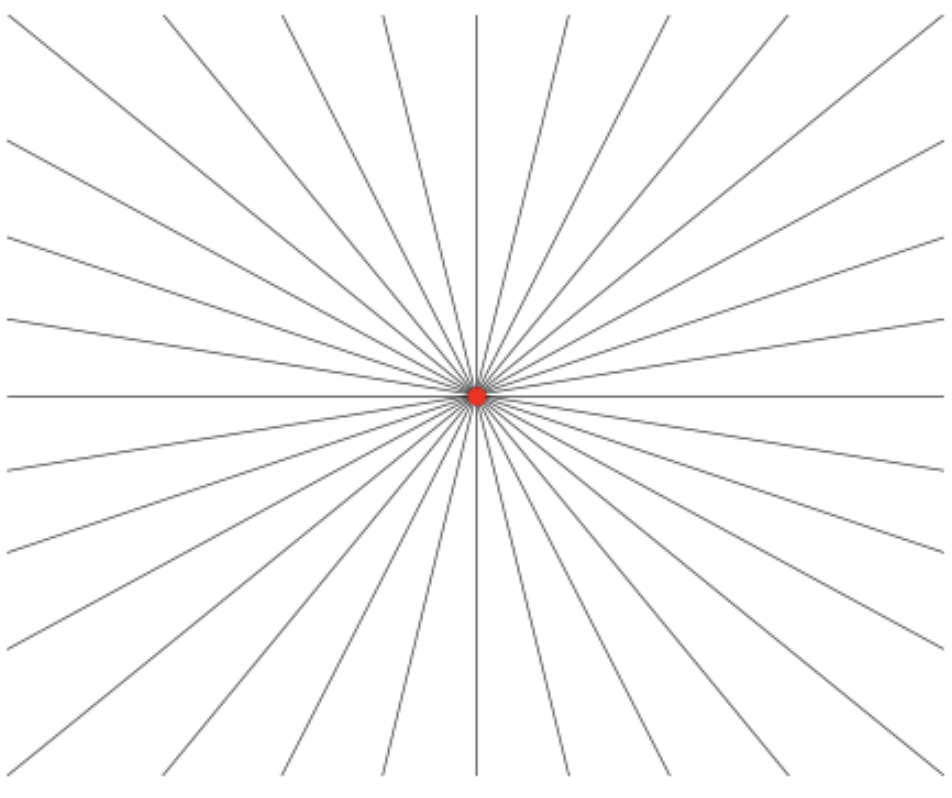
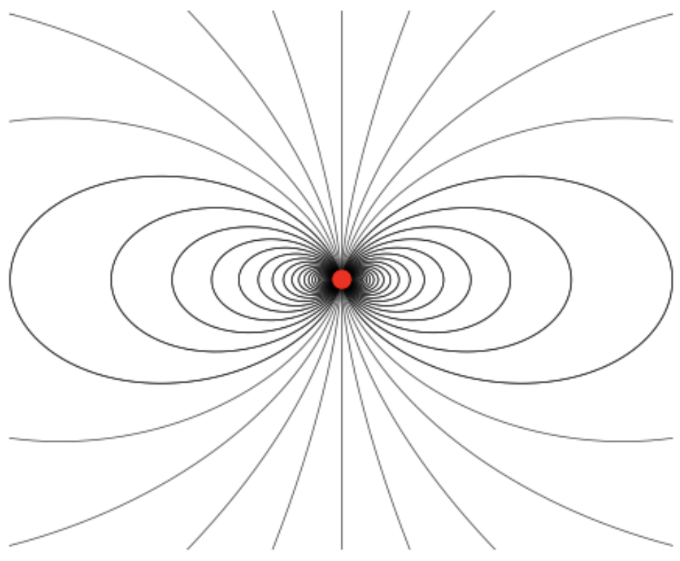
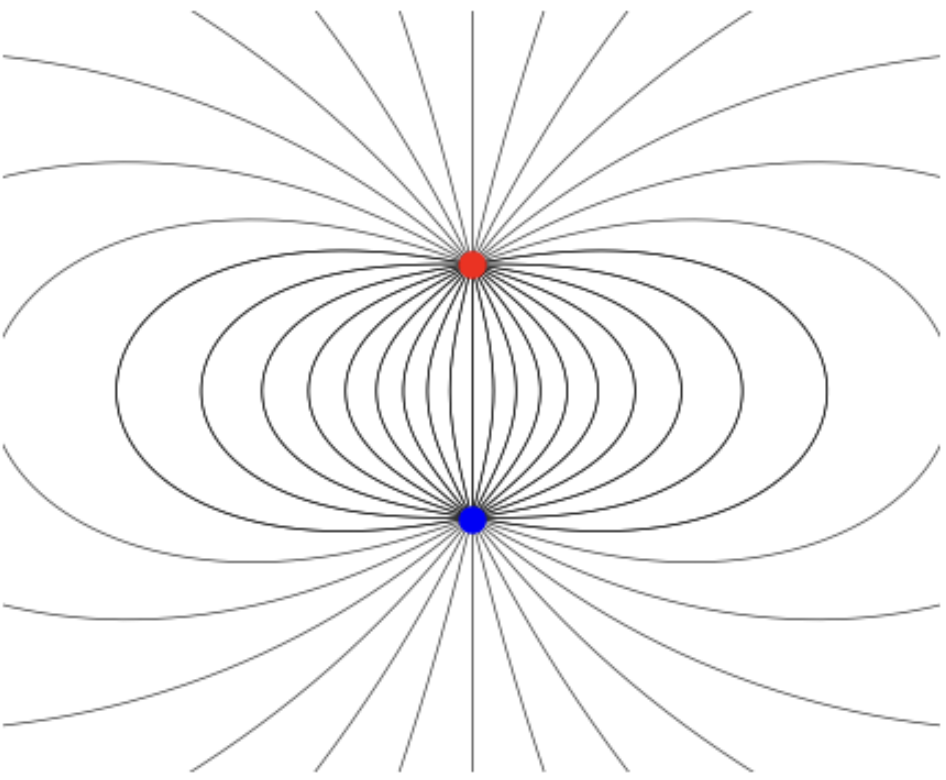
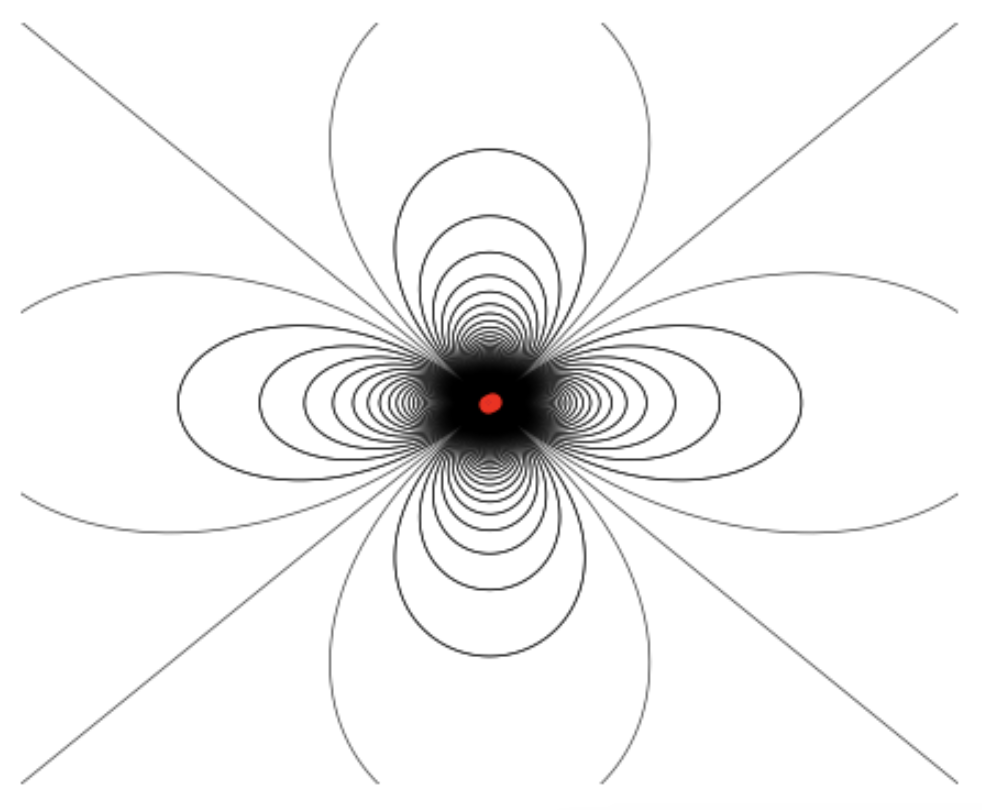
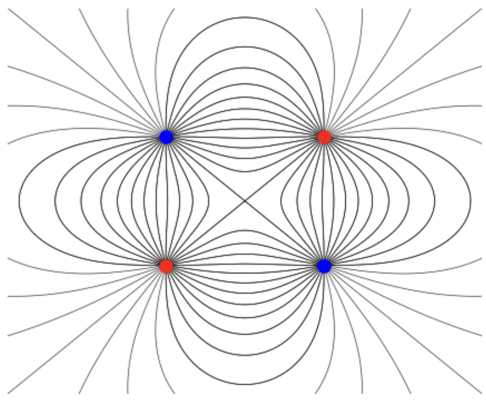
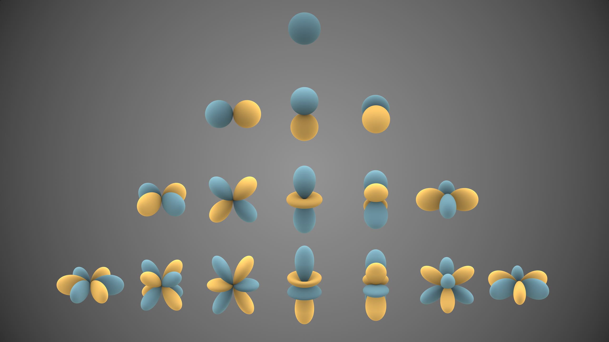

Multipole Expansion
In this last chapter on electrostatics, we will conclude our discussion of boundary value problems by discussing briefly the applications of complex methods to solving Laplace’s equation in two dimensions. We will then move on to the discussion of the multipole expansion of electrostatics, a way to obtain approximate solutions to electrostatics problems. The idea of a multipole expansion turns out to be very useful not just in electrostatics, but in all of electromagnetism. We’ll see extensions of these ideas to other areas of electromagnetism in future chapters.
Complex Methods
In many cases we find ourselves interested in boundary value problems that can be reduced to two dimensions. For example, if the symmetry of a problem dictates that the potential cannot depend on the \(z\)-coordinate, we can write \(\phi(\mathbf{x}) = \phi(x,y)\), which reduces the problem to a two dimensional problem in the \(xy\)-plane.
While the techniques we’ve covered so far we’ll often work in this setting, there’s another technique that can be used to solve more difficult problems that employs the tools of complex analysis, particular the theory of analytic functions and conformal mappings. We covered the mathematical background of this subject in the appendix. It’s recommend that the reader read that material before proceeding further with this section.
Complex Potential
Suppose \(\phi(\mathbf{x}) = \phi(x,y)\) is the 2-dimensional scalar potential for some boundary value problem free of source charges. Then we know that the potential must satisfy Laplace’s equation \(\nabla^2 \phi = 0\) inside the boundary region. We know from the appendix that any harmonic function in two dimensions can be thought of as the real part of some analytic function in the complex plane.
We can thus use the potential \(\phi(x,y)\) to define a complex-valued analytic function \(F(z)\) of the form \[ F(z) = \phi(x,y) + i \psi(x,y) \ , \] where \(z = x + i y\) is a complex variable whose real part is \(x\) and whose imaginary part is \(y\), and \(\psi(x,y)\) is the harmonic conjugate of the potential. We call \(F(z)\) the complex potential, and \(\psi(x,y)\) the stream function.
Since \(F(z)\) is analytic inside the boundary region, we know that it must satisfy the Cauchy-Riemann equations in this region, \[ \frac{\partial \phi}{\partial x} = \frac{\partial \psi}{\partial y} \quad , \quad \frac{\partial \phi}{\partial y} = -\frac{\partial \psi}{\partial x} \ . \] Moreover, the potential \(\phi(x,y)\) and the stream function \(\psi(x,y)\) must each satisfy Laplace’s equation inside the boundary region, \[ \nabla^2 \phi(x,y) = 0 \quad , \quad \nabla^2 \psi(x,y) = 0 \ . \] Since the stream function is the harmonic conjugate of the potential, we can express it formally as a function of the potential by \[ \psi(x,y) = -\int dx \ \frac{\partial \phi}{\partial y} + \int dy \ \frac{\partial \phi}{\partial x} \ . \] Indeed, this relationship follows directly from the Cauchy-Riemann equations. This means that the stream function is completely determined by the potential, up to additive constants.
We also know that the level curves of \(\phi(x,y)\), i.e. the equipotentials, must be perpendicular to the level curves of \(\psi(x,y)\) in this region, or equivalently \(\nabla \phi \cdot \nabla \psi = 0\). This lets us assign meaning to the stream function. The level curves of the stream function represent the direction of flow of electric field lines. To see why this is true, observe we can take the gradient of \(\psi(x,y)\) and express it directly in terms of the electric field \(\mathbf{E} = -\nabla \phi\) using the Cauchy-Riemann equations. We have \[ \nabla \psi = \frac{\partial \psi}{\partial x} \mathbf{e}_x + \frac{\partial \psi}{\partial y} \mathbf{e}_y = -\frac{\partial \phi}{\partial y} \mathbf{e}_x + \frac{\partial \phi}{\partial x} \mathbf{e}_y = E_y \mathbf{e}_x - E_x \mathbf{e}_y \ . \] That is, we have \[ \mathbf{E}(x,y) = \frac{\partial \psi}{\partial y} \mathbf{e}_x - \frac{\partial \psi}{\partial x} \mathbf{e}_y \ . \] Since \(\nabla \psi\) is perpendicular to the level curves of \(\psi(x,y)\), and since \(\mathbf{E} \cdot \nabla \psi = 0\), it must be the case that the electric field lines point along the level curves of the stream function.
We can also express the electric field directly in terms of a the complex derivative of the complex potential \(F(z)\). Using the properties of complex derivatives, we can write \[ \frac{dF}{dz} = \frac{\partial \phi}{\partial x} - i \frac{\partial \phi}{\partial y} = -E_x + i E_y \ . \] Notice if we then take the negative complex conjugate of this derivative, we get a function whose real and imaginary parts are the components of the electric field, \[ -\bigg(\frac{dF}{dz}\bigg)^* = E_x + i E_y \ . \] This is just the complex equivalent of the statement that the electric field is the negative gradient of the potential.
Example: Complex potential of an infinite uniformly charged wire
Consider again an infinitely long wire of uniform charge line density \(\lambda\) oriented along the \(z\)-axis. We know the electric field is given in cylindrical coordinates by \[ \mathbf{E}(\mathbf{x}) = \frac{2\lambda}{\varrho} \mathbf{e}_\varrho \ , \] which implies that the potential is \[ \phi(\mathbf{x}) = -2\lambda \log\varrho \ . \] We’d like to find the complex potential \(F(z)\) for this wire in the \(xy\)-plane. We can then write the ordinary potential in the form \[ \phi(x,y) = -\lambda \log(x^2 + y^2) \ . \] Away from the wire, the potential must satisfy Laplace’s equation \(\nabla^2 \phi(x,y) = 0\). The associated stream function \(\psi(x,y)\) can most easily be found by applying the Cauchy-Riemann equations to \(\phi(x,y)\). We have \[ \begin{align*} \frac{\partial \psi}{\partial y} &= \frac{\partial \phi}{\partial x} = -2\lambda \frac{x}{x^2 + y^2} \ , \\ \frac{\partial \psi}{\partial x} &= -\frac{\partial \phi}{\partial y} = 2\lambda \frac{y}{x^2 + y^2} \ . \end{align*} \] Integrating both sides of these equations, we then get \[ \begin{align*} \psi(x,y) &= -2\lambda \int dy \ \frac{x}{x^2 + y^2} = -2\lambda \tan^{-1} \frac{y}{x} + c_1(x) \ , \\ \psi(x,y) &= 2\lambda \int dx \ \frac{y}{x^2 + y^2} = 2\lambda \tan^{-1} \frac{x}{y} + c_2(y) \ . \end{align*} \] Now, observe that we can use a trig identity to write \[ \tan^{-1} \frac{x}{y} = \frac{\pi}{2} - \tan^{-1} \frac{y}{x} \ . \] This means we must have \[ \psi(x,y) = -2\lambda \tan^{-1} \frac{y}{x} + c_1(x) = 2\lambda \bigg(\frac{\pi}{2} - \tan^{-1} \frac{y}{x}\bigg) + c_2(y) \ . \] For these equations to be consistent, we require that \(c_1(x)\) and \(c_2(y)\) both be constant, with \(c_1 = \pi\lambda + c_2\). Any choice of constants will work so long as this equation is satisfied. We’ll choose \(c_1=0\), so that the stream function can be written \[ \psi(x,y) = -2\lambda \tan^{-1} \frac{y}{x} \ . \] This means the complex potential is then \[ F(z) = \phi(x,y) + i \psi(x,y) = -\lambda \log(x^2 + y^2) - i \ 2\lambda \tan^{-1} \frac{y}{x} \ . \] We can rewrite this as an explicit function of \(z = x+iy\) by observing that in polar coordinates we have \[ \log z = \log |z| e^{i\varphi} = \log(|z|) + i \varphi = \frac{1}{2} \log(x^2 + y^2) + i \tan^{-1} \frac{y}{x} \ . \] Plugging this into the complex potential and simplifying, we finally get \[ F(z) = -2 \lambda \log z \ . \] Surprisingly, the complex potential looks almost identical to the ordinary potential, except with \(\varrho\) replaced by \(z\).
It’s worth mentioning another interesting fact. Notice that in calculating the complex potential for the wire that we’re only looking at the projection of the wire onto the \(xy\)-plane. Since the wire is oriented along the \(z\)-axis, its projection must be a point charge. This means that the complex potential of a point charge in two dimensions is exactly the same as the complex potential of an infinitely long wire. Indeed, the 2-dimensional Green’s function for a point charge \(q\) at the origin is \(G(\mathbf{x}) = -2 \log \varrho\), which means its potential is \(\phi(\mathbf{x}) = -2q \log\varrho\). If we thus set \(q = \lambda\) then the two potentials are evidently identical.
Conformal Mappings
Now, recall that we can also think of any complex function as a geometric transformation acting on the complex plane. That is, any complex function \(w = T(z)\) can be thought of as mapping points \(z = x + iy\) in the \(z\)-plane to points \(w = u+iv\) in the \(w\)-plane. When \(T(z)\) is analytic in some region of the \(z\)-plane, these transformations are called conformal mappings. Conformal mappings can be shown to preserve the angles between curves under mapping. Moreover, under a conformal mapping the area element \(da = dxdy\) merely gets rescaled to a new area element \(da' = dudv\) by \[ du dv = \bigg|\frac{dw}{dz}\bigg|^2 dxdy \ . \] Most importantly for our purposes, conformal mappings preserve harmonic functions. That is, if \(\phi(u,v)\) is some function that satisfies Laplace’s equation in the \(w\)-plane, then \(\phi(x,y) = \phi\big(u(x,y), v(x,y)\big)\) satisfies Laplace’s equation in the original \(z\)-plane, and the boundary conditions are preserved under the transformation \(w = T(z)\).
Let’s first prove the first part. Suppose \(\phi(u,v)\) is harmonic in some region of the \(w\)-plane, meaning inside this region it satisfies Laplace’s equation with respect to \(u\) and \(v\), \[ \frac{\partial^2 \phi}{\partial u^2} + \frac{\partial^2 \phi}{\partial v^2} = 0 \ . \] Since \(\phi(u,v)\) is harmonic, it must be the real part of some analytic function \(F(w) = \phi(u,v) + i\psi(u,v)\) in the \(w\)-plane. And since the composition of analytic functions is also analytic, then the function \[ F(T(z)) = \phi\big(u(x,y), v(x,y)\big) + i \psi\big(u(x,y), v(x,y)\big) \] must also be analytic in some region of the \(z\)-plane. In particular, this means the function \(\phi(x,y) = \phi\big(u(x,y), v(x,y)\big)\) must also be harmonic in this region of the \(z\)-plane, hence satisfying Laplace’s equation with respect to \(x\) and \(y\), \[ \frac{\partial^2 \phi}{\partial x^2} + \frac{\partial^2 \phi}{\partial y^2} = 0 \ . \] We’ll now prove the second part, namely that conformal mappings preserve the boundary conditions. We’ll focus on the usual cases where we have Dirichlet or Neumann boundary conditions. The mixed boundary condition case follows from these.
Suppose \(\mathcal{C}_z\) is some smooth curve in the \(z\)-plane that under the conformal mapping \(w=T(z)\) maps to another smooth curve \(\mathcal{C}_w\) in the \(w\)-plane. Suppose first that \(\phi(u,v) = \phi_0\) is constant along the curve \(\mathcal{C}_w\) in the \(w\)-plane. Clearly then, we have \[ \phi(x,y) = \phi\big(u(x,y), v(x,y)\big) = \phi_0 \ . \] That is, \(\phi(x,y)\) will also be constant along the curve \(\mathcal{C}_z\) in the \(z\)-plane. This proves that Dirichlet boundary conditions are preserved under a conformal mapping.
Suppose next that \(\partial \phi / \partial n_w = 0\) along the curve \(\mathcal{C}_w\) in the \(w\)-plane, where \(\mathbf{n}_w\) is the normal vector to this curve. Since \[ \frac{\partial \phi}{\partial n_w} = \nabla \phi(u,v) \cdot \mathbf{n}_w = 0 \ , \] this can only be true if the curve \(\mathcal{C}_w\) is perpendicular to the level curves of \(\phi(u,v)\) in the \(w\)-plane. However, the level curves of \(\phi(u,v)\) are the same as the level curves of \(\phi(x,y) = \phi\big(u(x,y), v(x,y)\big)\), since constants get mapped to constants under the conformal mapping. This means in the \(z\)-plane that the level curves of \(\phi(x,y)\) will again be perpendicular to the curve \(\mathcal{C}_z\). That is, if \(\mathbf{n}_z\) is the normal vector to the curve \(\mathcal{C}_z\) we must have \[ \frac{\partial \phi}{\partial n_z} = \nabla \phi\big(u(x,y), v(x,y)\big) \cdot \mathbf{n}_z = 0 \ . \] This proves that Neumann boundary conditions are preserved under a conformal mapping. By combining these results together, it’s possible to show that mixed boundary conditions are also preserved under conformal mappings.
2D Boundary Value Problems
The results of the previous section mean that, given some conformal mapping, we essentially have a duality between BVPs in the \(xy\)-plane and BVPs in the \(uv\)-plane. If we can somehow find such a conformal mapping that simplifies the problem so that it’s much easier to solve in the new space using any of the techniques we’ve covered so far, we can map it back to get the potential that solves the original BVP.
Of course, the challenging part is finding a conformal mapping \(w = T(z)\) that simplifies the given problem. There’s an art to this, involving looking at the geometry of the original problem and using that to identify a good transformation that makes the problem easier to solve in a new space. This is best shown by example.
Let’s start with a relatively simple BVP that we can solve using methods we’ve already covered.
Example: Long hollow cylinder held at two different potentials
Suppose an infinitely long hollow cylinder of radius \(R\) is such that exactly half of the circular cross-section of the cylinder is held at a constant potential \(V\), while the other half is grounded. We’ll assume each half of the cylinder is separated by a very thin insulating sheet. We’ll assume that no other source charges are present inside our outside the cylinder. We’re interested in finding the potential at each point inside of the cylinder.
FIGURE (show cylinder with given potentials)
Inside the cylinder the potential must satisfy Laplace’s equation. We’ll formulate this problem as a BVP in Cartesian coordinates, \[ \begin{align*} \begin{cases} \nabla^2 \phi(x,y) = 0 \ , \\ \text{where} \ \phi(x,y) = 0 \ \text{when} \ x^2+y^2 = R^2 \ \text{and} \ x > 0 \ , \\ \text{and} \ \phi(x,y) = V \ \text{when} \ x^2+y^2 = R^2 \ \text{and} \ x < 0 \ . \end{cases} \end{align*} \] We’ll solve this problem two different ways to show that the results agree, first using separation of variables, and second using conformal mappings.
First, recall from the previous chapter that any BVP with cylindrical symmetry, as this problem does, has a solution in cylindrical coordinates of the form \[ \phi(\varrho,\varphi) = a_0 + b_0 \log\varrho + \sum_{n=1}^\infty \big[(a_n \cos n\varphi + b_n \sin n\varphi)\varrho^n + (c_n \cos n\varphi + d_n \sin n\varphi)\varrho^{-n}\big] \ . \] For the potential to stay finite inside the cylinder we require that \(b_0 = c_n = d_n = 0\). What remains then is a Fourier series, \[ \phi(\varrho,\varphi) = a_0 + \sum_{n=1}^\infty (c_n \cos n\varphi + d_n \sin n\varphi)\varrho^{-n} \ . \] The coefficients can be found using standard Fourier series methods. By applying the boundary conditions, one can show that \(a_0 =V/2\), \(a_n=0\) for all \(n\), and \(b_n=0\) for all even \(n\), while for odd \(n\) we have \[ b_n = -\frac{2V}{n\pi R^n} \quad , \quad n=1,3,5,\cdots \ . \] Plugging these in, we get \[ \phi(\varrho,\varphi) = \frac{V}{2} - \frac{2V}{\pi} \sum_{n=1,3,5,\cdots} \bigg(\frac{\varrho}{R}\bigg)^n \frac{\sin n\varphi}{n} \ . \] It turns out this solution can also be written in closed form by using the Taylor expansion of the arctangent function. We get \[ \phi(\varrho,\varphi) = \frac{V}{2} - \frac{V}{\pi} \tan^{-1} \frac{2R\varrho \sin\varphi}{R^2 - \varrho^2} \ . \] Let’s now show that we get the same result using conformal mappings. Since the problem is cylindrically symmetric, we know that the solution must only depend on \(x\) and \(y\). Suppose then that we seek a potential \(\phi(x,y)\), where \(x\) and \(y\) are the real and imaginary components of a complex variable \(z\). Our goal is to find a conformal mapping \(w = T(z)\) that makes \(\phi(u,v)\) especially easy to write down in the \(w\)-plane. To that end, consider the following conformal mapping, \[ w = -i \frac{z-R}{z+R} \ . \] By writing \(w = u(x,y) + iv(x,y)\) and simplifying this expression, it’s not hard to show that \[ u = \frac{2Ry}{(x+R)^2 + y^2} \quad , \quad v = \frac{R^2 - x^2 - y^2}{(x+R)^2 + y^2} \ . \] To see why this is a useful conformal mapping to consider, let’s look at how the boundary cylinder transforms under the transformation. In the \(z\)-plane, the boundary cylinder can be parametrized by \(z(\varphi) = R e^{i\varphi}\), where \(-\pi \leq \varphi \leq \pi\). Under the transformation \(w=T(z)\), the cylinder transforms to a curve in the \(w\)-plane of the form \[ w(\varphi) = -i \frac{z(\varphi)-R}{z(\varphi)+R} = -i \frac{R e^{i\varphi}-R}{R e^{i\varphi}+R} = -i \frac{e^{i\varphi}-1}{e^{i\varphi}+1} \ . \] By multiplying the numerator and denominator by \((e^{i\varphi}+1)^* = e^{-i\varphi}+1\) and simplifying, it’s not hard to show that \[ w(\varphi) = \frac{\sin\varphi}{1 + \cos\varphi} = \tan \frac{\varphi}{2} \ . \] This means the cylinder transforms to the curve \(u(\varphi) = \tan \varphi / 2\) and \(v(\varphi) = 0\) in the \(w\)-plane. Clearly this is just the real axis in the \(w\)-plane. When \(-\pi < \varphi < 0\) the curve runs from \(u=-\infty\) to \(u=0\), and when \(0 < \varphi < \pi\) the curve runs from \(u=0\) to \(u=\infty\). What we’ve managed to do with this conformal mapping is transform the surface of the cylinder in the \(z\)-plane into the \(u\)-axis in the \(w\)-plane. Moreover, the interior of the cylinder in the \(z\)-plane gets mapped to the upper half of the \(w\)-plane.
What about the boundary conditions? If \(\phi(x,y) = 0\) on the cylinder when \(x > 0\), under the conformal mapping we must have \(\phi(u,0) = 0\) when \(u > 0\). Similarly, if \(\phi(x,y) = V\) on the cylinder when \(x < 0\), we must have \(\phi(u,0) = V\) when \(u < 0\). The points \(x = \pm R\) in the \(z\)-plane where these two parts of the cylinder joint both map to \(w = 0\). In the figure below we show a visualization of this mapping, including the boundary conditions.
FIGURE (show this conformal mapping with BCs included)
We now have an equivalent BVP to solve in the \(w\)-plane, \[ \begin{align*} \begin{cases} \nabla^2 \phi(u,v) = 0 \ , \\ \text{where} \ \phi(u,0) = 0 \ \text{when} \ u > 0 \ , \\ \text{and} \ \phi(u,0) = V \ \text{when} \ u < 0 \ . \end{cases} \end{align*} \] So how do we find such a potential? The trick is to find a function \(\phi(w) = \phi(u,v)\) that’s analytic in the upper half-plane while also satisfying the boundary conditions. If the function is analytic we know it must satisfy Laplace’s equation, and if it satisfies the boundary conditions we know it must be the unique solution. To that end, let’s try to guess a solution. Consider the function \[ \phi(w) = \frac{V}{\pi} \text{Arg} \ w \ , \] where \(\text{Arg} \ w\) is the phase of \(w\), or equivalently the angle of the point \(w = u+iv\) in the \(w\)-plane relative to the positive \(u\)-axis. First, notice that \(\phi(w)\) satisfies the boundary conditions, since \(\text{Arg} \ w = 0\) along the positive \(u\)-axis and \(\text{Arg} \ w = \pi\) along the negative \(u\)-axis. Moreover, the function is analytic in the upper half plane \(v > 0\) since \(f(w) = \text{Arg} \ w\) is analytic when \(v > 0\). This guarantees that \(\phi(w) = \phi(u,v)\) satisfies Laplace’s equation in the upper half plane. By the uniqueness theorem then, this must be the unique solution that solves the given BVP in the \(w\)-plane.
We now need only transform back to the \(z\)-plane to get the original potential \(\phi(x,y)\) we seek. To do this we need to express the phase \(\text{Arg} \ w\) as a function of \(x\) and \(y\). Since the phase of a product is the sum of their phases, we have \[ \text{Arg} \ w = \text{Arg} \bigg(-i \frac{z-R}{z+R}\bigg) = \text{Arg} \ i - \text{Arg} \ \frac{z-R}{z+R} \ . \] Now, \(\text{Arg} \ i = \pi/2\), and the phase of the second term is just the arctangent of its imaginary part divided by its real part, which turns out to be given by \[ \text{Arg} \ \frac{z-R}{z+R} = \tan^{-1} \frac{2yR}{R^2 - x^2 - y^2} \ . \] Plugging this back into the potential, we have \[ \phi(x,y) = \frac{V}{\pi} \bigg[\frac{\pi}{2} - \tan^{-1} \frac{2yR}{R^2 - x^2 - y^2}\bigg] \ . \] Or, expressed in cylindrical coordinates, we have \[ \phi(\varrho,\varphi) = \frac{V}{2} - \frac{V}{\pi} \tan^{-1} \frac{2R \varrho\sin\varphi}{R^2 - \varrho^2} \ . \] This is of course exactly the result we found above using separation of variables. It’s fair to ask if the use of complex methods made this problem any easier than just using separation of variables. In one sense, we replaced the need to solve a PDE with the algebra of complex variables. But in another sense we needed to be a lot more clever. For complex methods to be useful we need to be able to guess a conformal mapping that simplifies the problem. In this case we were able to do that, but it’s not always so obvious how to even find such a mapping. There are, however, problems that are much harder to solve using other methods where complex methods happen to be quite helpful. We’ll see an example of this next.
Example:
- Work capacitor example or something just as complex.
Cartesian Multipole Expansion
We will now turn our attention away from boundary value problems and consider again the problem of a localized charge distribution sitting somewhere in space, free of boundary surfaces like conductors or whatever. We know that in this setting we can formally express the potential as an integral \[ \phi(\mathbf{x}) = \int d^3\mathbf{x}' \frac{\rho(\mathbf{x}')}{|\mathbf{x} - \mathbf{x}'|} \ . \] The hard part is actually solving this integral for a general charge distribution \(\rho(\mathbf{x}')\). It would be nice then if we could find a systematic way to approximate the potential as a series in inverse powers of the distance of the field point from the charge distribution. Provided we can find such an expansion, we can often find a good approximate solution when we’re far away from the source charges by considering the first few expansion terms. This sort of expansion is called a multipole expansion.
Derivation
Based on intuition and past examples, we expect that very far away from the charge distribution the potential should be approximately that of a point charge, falling off like \(1/r\) when \(r \gg r'\). But we’ve also seen potentials that fall off like \(1/r^2\) as well. In fact, we can find charge distributions with potentials that fall off like \(1/r^n\) for any positive integer \(n\).
Since the only part of the integrand that depends on the field point \(\mathbf{x}\) is the Green’s function \(G(\mathbf{x} - \mathbf{x}')\), it suffices to find an expression of the Green’s function in powers of \(1/r\). Provided we can do this, we can plug the expansion back into the integral formula for the potential and get an expansion for the potential in powers of \(1/r\).
Assuming a scalar field \(f(\mathbf{x})\) is infinitely differentiable at some point \(\mathbf{x}=\mathbf{x}_0\), we can Taylor expand the function about this point. It’s not hard to see using index notation that this expansion will take the following form, \[ f(\mathbf{x}) = \sum_{n=0}^\infty \frac{1}{n!} (\mathbf{x} \cdot \nabla)^n f(\mathbf{x}_0) = f(\mathbf{x}_0) + \mathbf{x} \cdot \nabla f(\mathbf{x}_0) + \frac{1}{2} x_i x_j \frac{\partial^2 f}{\partial x_j \partial x_i} \bigg|_{\mathbf{x}=\mathbf{x}_0} + \cdots \ . \] We’d like to now Taylor expand the Green’s function \(G(\mathbf{x} - \mathbf{x}')\), assuming \(\mathbf{x}'\) is the expansion variable and \(\mathbf{x}\) is the expansion point of interest. It’s not hard to see this will be given by \[ G(\mathbf{x} - \mathbf{x}') = \sum_{\ell=0}^\infty \frac{(-1)^\ell}{\ell!} (\mathbf{x}' \cdot \nabla)^\ell G(\mathbf{x}) = G(\mathbf{x}) - \mathbf{x}' \cdot \nabla G(\mathbf{x}) + \frac{1}{2} x_i' x_j' \frac{\partial^2 G}{\partial x_j \partial x_i} + \cdots \ . \] If we now let \(G(\mathbf{x} - \mathbf{x}') = 1/|\mathbf{x} - \mathbf{x}'|\), then \(G(\mathbf{x}) = 1/r\), and so we can write \[ \frac{1}{|\mathbf{x} - \mathbf{x}'|} = \sum_{\ell=0}^\infty \frac{(-1)^\ell}{\ell!} (\mathbf{x}' \cdot \nabla)^\ell \frac{1}{r} = \frac{1}{r} - \mathbf{x}' \cdot \nabla \frac{1}{r} + \frac{1}{2} x_i x_j \frac{\partial^2}{\partial x_j \partial x_i} \frac{1}{r} + \cdots \ . \] Now, we already know \(\nabla 1/r = -\mathbf{x} / r^3\). Moreover, notice that \[ x_i' x_j' \frac{\partial^2}{\partial x_j \partial x_i} \frac{1}{r} = x_i' x_j' \frac{\partial^2}{\partial x_j \partial x_i} (x_k x_k)^{-1/2} = x_i' x_j' \frac{3 x_i x_j - r^2 \delta_{ij}}{r^5} \ . \] Up to the quadratic term, we can thus expand the Green’s function in vector notation as \[ \boxed{ \frac{1}{|\mathbf{x} - \mathbf{x}'|} = \frac{1}{r} + \frac{\mathbf{x} \cdot \mathbf{x}'}{r^3} + \frac{3 (\mathbf{x} \cdot \mathbf{x}')^2 - r^2 r'^2}{2r^5} + \cdots } \ . \] We’ve thus managed to expand the Green’s function in powers of \(1/r\), at least up to the cubic term. We could keep going if we like. In fact the expansion above is just a binomial expansion, so it’s not difficult. We’ll defer the full expansion to later.
Plugging this Green’s function expansion back into the integral for the potential, we get \[ \phi(\mathbf{x}) = \int d^3\mathbf{x}' \ \rho(\mathbf{x}') \bigg[\frac{1}{r} + \frac{\mathbf{x} \cdot \mathbf{x}'}{r^3} + \frac{3 (\mathbf{x} \cdot \mathbf{x}')^2 - r^2 r'^2}{2r^5} + \cdots\bigg] \ . \] Notice that, apart from the quadratic term, we can group the source-dependent terms together inside each integral to write \[ \phi(\mathbf{x}) = \frac{1}{r} \int d^3\mathbf{x}' \ \rho(\mathbf{x}') + \frac{\mathbf{x}}{r^3} \cdot \int d^3\mathbf{x}' \ \rho(\mathbf{x}') \mathbf{x}' + \frac{1}{2r^5} \int d^3\mathbf{x}' \ \rho(\mathbf{x}') [3 (\mathbf{x} \cdot \mathbf{x}')^2 - r^2 r'^2] + \cdots \ . \] The fact that the integrals of the first two terms depend only on the source suggests we give those a name. The first integral, which is evidently just the total charge of the distribution, we’ll call the monopole moment \(q\), \[ q \equiv \int d^3\mathbf{x}' \ \rho(\mathbf{x}') \ . \]
Notice that this means the first expansion term is just \(q/r\), which agrees with our prior intuition that a charge distribution should act as a point charge in the far field limit, so long as \(q \neq 0\). Its corrections will just be the next expansion terms.
The second integral is evidently a vector depending only on the source distribution. We’ll call it the dipole moment \(\mathbf{p}\), \[ \mathbf{p} \equiv \int d^3\mathbf{x}' \ \rho(\mathbf{x}') \mathbf{x}' \ . \] In its current form the third integral doesn’t depend solely on the sources. We’ll deal with that later. For now, just note that we can express this third term in the form \[ \frac{\mathbf{x} \cdot \mathbf{Q} \cdot \mathbf{x}}{2r^5} = \frac{x_i x_j Q_{ij}}{2r^5} \ , \] where \(\mathbf{Q}\) is a rank-2 tensor called the quadrupole moment whose components are given by \[ Q_{ij} = \int d^3\mathbf{x}' \ \rho(\mathbf{x}') [3 x_i' x_j' - r'^2 \delta_{ij}] \ . \] All of these moments are called multipole moments. We’ll explain the physical meaning behind each of these in more detail in the following sections. For now, just note that using these multipole moments we can re-write the potential expansion in the form \[ \boxed{ \phi(\mathbf{x}) = \frac{q}{r} + \frac{\mathbf{p} \cdot \mathbf{x}}{r^3} + \frac{\mathbf{x} \cdot \mathbf{Q} \cdot \mathbf{x}}{2r^5} + \cdots } \ . \] This is the Cartesian multipole expansion. Let’s now look more deeply at each of these expansion terms one by one.
Monopole Moment
Substituting in the monopole moment \(q\), we can write the first term in the multipole expansion simply as \[ \boxed{ \phi^{(0)}(\mathbf{x}) = \frac{q}{r} } \ . \] This is called the monopole potential. Clearly it falls off like \(1/r\). Recall the monopole moment \(q\) is given by \[ \boxed{ q \equiv \int d^3\mathbf{x}' \ \rho(\mathbf{x}') } \ . \] Evidently, the monopole moment represents the total net charge of the distribution.
Since the electric field is \(\mathbf{E}^{(0)} = -\nabla \phi^{(0)}\), the monopole field \(\mathbf{E}^{(0)}\)will be given by Coulomb’s Law, with \[ \mathbf{E}^{(0)}(\mathbf{x}) \equiv \frac{q}{r^2} \mathbf{x} \ . \] The field lines for the monopole look exactly as we’d expect. We show a plot of these field lines below to compare with the field lines of the higher order multipole terms in the next few sections. As usual, the field lines are assume to point outward for a positive point charge, and inward for a negative point charge.

Naturally, the best physical model of the monopole moment is just a point charge \(q\) centered at the origin, which exactly reproduces the field lines shown above.
Since this is the first term in the multipole expansion, we should expect that very far away from the charge distribution, the potential should approximate the of a point charge with total net charge \(q\). Of course, this is only true if \(q \neq 0\). If \(q=0\), we have to proceed to the next term in the multipole expansion for a good approximation, the dipole potential.
Dipole Moment
Substituting in the definition for the second multipole moment \(\mathbf{p}\), we can write the second term in the multipole expansion as \[ \boxed{ \phi^{(1)}(\mathbf{x}) \equiv \frac{\mathbf{p} \cdot \mathbf{x}}{r^3} } \ . \] We call this expansion term the dipole potential. This potential falls off like \(1/r^2\). The dipole moment \(\mathbf{p}\) is a vector given by
\[ \mathbf{p} \equiv \int d^3\mathbf{x}' \ \rho(\mathbf{x}') \mathbf{x}' \ . \] Notice that the dipole moment, like all multipole moments, depends only on the source charges. It does not depend at all on the field point. Thus, the dipole moment captures all relevant information about the source charges in this expansion term. As defined, the dipole moment evidently has dimensions of charge times distance. In particular, this means we should always expect the components of the dipole moment to go like \(qd\), where \(d\) is some characteristic length scale.
By writing \(\mathbf{E}^{(1)} = -\nabla \phi^{(1)}\) in index notation and plugging in the dipole potential above, while keeping in mind that \(\mathbf{p}\) doesn’t depend on \(\mathbf{x}\), one can show that the dipole field \(\mathbf{E}^{(1)}\) can be written as \[ \boxed{ \mathbf{E}^{(1)}(\mathbf{x}) \equiv \frac{3(\mathbf{p} \cdot \mathbf{x}) \mathbf{x} - r^2 \mathbf{p}}{r^5} } \ . \] Notice that, while the dipole potential falls off like \(1/r^2\) that, the dipole field falls off like \(1/r^3\), as we’d expect.
The field lines of the dipole field are those of a pure dipole, shown below. Unlike the field lines of the monopole field, the field lines of the dipole field never terminate at infinity except along the axis of the dipole moment \(\mathbf{p}\). The other field lines instead wrap back around on the source in the opposite direction.

Example: Physical dipole
We want to now try to get an idea of what the dipole physically says about a charge distribution. To that end let’s consider the following simple problem. Suppose we have two opposite point charges \(+q\) and \(-q\) separated from each other by a distance \(d\) along some axis, say the \(z\)-axis to keep things simple. We’ll suppose the \(+q\) charge is at the point \(\mathbf{x}_+ = d/2 \mathbf{e}_z\) and the \(-q\) charge is at the point \(\mathbf{x}_- = -d/2 \mathbf{e}_z\). We call this the physical dipole.
By the superposition principle, the exact potential of the physical dipole is given by \[ \begin{align*} \phi(\mathbf{x}) &= \frac{q}{|\mathbf{x} - \mathbf{x}_+|} - \frac{q}{|\mathbf{x} - \mathbf{x}_-|} \\ &= q\bigg[\frac{1}{\sqrt{x^2 + y^2 + (z-d/2)^2}} - \frac{1}{\sqrt{x^2 + y^2 + (z+d/2)^2}}\bigg] \ , \end{align*} \] and the exact E-field of the physical dipole is given by \[ \begin{align*} \mathbf{E}(\mathbf{x}) &= q\frac{\mathbf{x} - \mathbf{x}_+}{|\mathbf{x} - \mathbf{x}_+|^3} - q\frac{\mathbf{x} - \mathbf{x}_-}{|\mathbf{x} - \mathbf{x}_-|^3} \\ &= q \bigg[\frac{\mathbf{x} - d/2 \ \mathbf{e}_z}{[x^2 + y^2 + (z-d/2)^2]^{3/2}} - \frac{\mathbf{x} + d/2 \ \mathbf{e}_z}{[x^2 + y^2 + (z+d/2)^2]^{3/2}}\bigg] \ . \end{align*} \] As formidable as this look, we can still plot the field lines numerically. Below is a plot of these field lines for the physical dipole, with the \(+q\) charge shown in red and the \(-q\) charge shown in blue. As always, the field lines go from positive charges to negative charges, and the equipotential curves are tangent to the field lines.

Compare these field lines for the physical dipole to those of the pure dipole field \(\mathbf{E}^{(1)}\) given before. Notice that near the source charges they two fields look nothing alike, but far away from the point charges the field lines look basically the same.
To connect the two, let’s calculate the monopole and dipole potentials for the physical dipole. First, notice that there is no net charge since \(q-q = 0\). This means there won’t be a monopole potential contribution. We’ll thus proceed to the dipole term.
To find the dipole moment \(\mathbf{p}\), notice that \(\rho(\mathbf{x}') = q \delta(\mathbf{x}' - \mathbf{x}_+) - q \delta(\mathbf{x}' - \mathbf{x}_-)\), which means we have \[ \mathbf{p} = \int d^3\mathbf{x}' \ \rho(\mathbf{x}') \mathbf{x}' = q(\mathbf{x}_+ - \mathbf{x}_-) = qd \mathbf{e}_z \ . \] This means the dipole potential is \[ \phi^{(1)}(\mathbf{x}) = \frac{\mathbf{p} \cdot \mathbf{x}}{r^3} = \frac{qd}{r^2} \cos\theta \ . \] In the far field limit \(r \gg d\) we expect that \(\phi(\mathbf{x}) \approx \phi^{(1)}(\mathbf{x})\). This can be confirmed through more effort by doing a binomial expansion of \(\phi(\mathbf{x})\) in powers of \(d/r\) and confirming we get the same result to leading order.
Is it possible to create a physical dipole whose potential is exactly that of the pure dipole, where \(\phi(\mathbf{x}) = \phi^{(1)}(\mathbf{x})\) exactly? Sort of. Informally, we could achieve this by essentially placing the two charges right on top of each other. That is, we let \(d \to 0\) while keeping the dipole moment \(|\mathbf{p}| = qd\) fixed. While we can imagine doing this mathematically, physically it’s a bit non-sensical, since to let \(d \to 0\) we’d also have to let \(q \to \infty\) just as quickly.
Note that there’s nothing special about the \(z\)-axis in this problem. We can orient the dipole along any axis we like. If the two opposite charges are separated by some vector \(\mathbf{d}\), their dipole moment will be \[ \mathbf{p} = q \mathbf{d} \ . \] This means the dipole moment will always point along the axis of the charges, in the direction of the positive charge.
In fact, we can model the dipole moment of an arbitrary charge distribution in a similar way. Suppose \(\rho(\mathbf{x}')\) is some arbitrary charge distribution. If we imagine the distribution consists of a bunch of discrete point charges, each positively or negatively charged, we can decompose \(\rho(\mathbf{x}')\) into a positively charge distribution \(\rho_+(\mathbf{x}')\) and negatively charge distribution \(\rho_-(\mathbf{x}')\) as \[ \rho(\mathbf{x}') = \rho_+(\mathbf{x}') + \rho_-(\mathbf{x}') \ , \] where \(\rho_\pm(\mathbf{x}')\) is a sum over \(N_\pm\) positive or negative charges \(q_i^{\pm}\) located at positions \(\mathbf{x}_i^\pm\), \[ \rho_\pm(\mathbf{x}') = \sum_{i=1}^{N_\pm} q_i^\pm \delta(\mathbf{x}' - \mathbf{x}_i^\pm) \ . \] We can now do an averaging process over these two distributions. The average charge \(q_\pm\) of each distribution will be \[ q_\pm \equiv \frac{1}{N_\pm} \sum_{i=1}^{N_\pm} q_i^\pm \] The average position of these charges will be their center of charges \(\mathbf{x}_\pm\), given by \[ \mathbf{x}_\pm \equiv \frac{1}{N_\pm} \sum_{i=1}^{N_\pm} q_i^+ \mathbf{x}_i^\pm \ . \] This means the total net charge is \(q_+ - q_-\), and the average separation between the \(q_+\) and \(q_-\) is \[ \mathbf{d} \equiv \mathbf{x}_+ - \mathbf{x}_- \ . \] The dipole moment of \(\rho(\mathbf{x}')\) can thus also be written as \[ \mathbf{p} = q_+ \mathbf{x}_+ - q_- \mathbf{x}_- \ . \] In the special case that the total net charge is zero, then \(q \equiv q_+ = -q_-\), in which case we get \(\mathbf{p} = q \mathbf{d}\), which is exactly what we derived above for the physical dipole in the far field limit. In this sense then, we can think of the dipole moment as representing the average charge polarization of a given charge distribution.
Example: Dipole moment of an azimuthally symmetric hollow sphere of charge
Consider a hollow spherical shell of radius \(R\) with a polar-dependent surface charge density of the form \(\sigma' = k \cos\theta'\). We’d like to find the dipole moment and potential associated with this distribution.
First, notice that this distribution has no net charge, since the monopole moment is \[ q = \int da' \ \sigma' = 2\pi R^2 k \int_0^\pi d\theta' \ \cos\theta' = 0 \ . \] This means the first term in the multipole expansion must be at least a dipole potential. Let’s now calculate the dipole moment. Notice first that the charge density is azimuthally symmetric about the \(z\)-axis. This means the dipole potential must point along the \(z\)-direction, with \(\mathbf{p} = p_z \mathbf{e}_z\). It thus suffices to calculate only the \(p_z\) component of the dipole moment. We have \[ p_z = \int da' \ \sigma' z' = \int_0^\pi R^2 \sin\theta' d\theta' \ k R \cos^2\theta' = \frac{4\pi}{3} k R^3 \ . \] With the dipole moment in hand we can now calculate the dipole potential. Evidently, we have \[ \phi^{(1)}(\mathbf{x}) = \frac{\mathbf{p} \cdot \mathbf{x}}{r^3} = \frac{p_z \cos\theta}{r^2} = \frac{4\pi}{3} kR \cos\theta \bigg(\frac{R}{r}\bigg)^2 \ . \] Since there is no monopole moment, this means in the far field limit the full potential can be approximated by \[ \phi(\mathbf{x}) \approx \frac{4\pi}{3} kR \cos\theta \bigg(\frac{R}{r}\bigg)^2 \ . \] In fact, this is the exact potential for this charge distribution. We calculated the exact potential for this distribution in the previous chapter and got the exact same result.
We can calculate the associated electric field as well, which is \[ \mathbf{E}(\mathbf{x}) = \mathbf{E}^{(1)}(\mathbf{x}) = \frac{3(\mathbf{p} \cdot \mathbf{e}_r) \mathbf{e}_r}{r^3} - \frac{\mathbf{p}} {r^3} = \frac{4\pi}{3} k \bigg(\frac{R}{r}\bigg)^3 \bigg(3\cos\theta \mathbf{e}_r - \mathbf{e}_z\bigg) \ . \] As expected, the electric field falls off like \(1/r^3\), with field lines coming out from the top of the sphere (which we can think of as a \(+q\) charge, and going into the bottom of the sphere (which we can think of as a \(-q\) charge).
FIGURE (sketch the field lines of this sphere, showing it looks like a dipole)
We’ll finish this section by asking how the dipole moment changes if the charge distribution is no longer centered at the origin, but instead some point \(\mathbf{a}\). This means each source point shifts by \(\mathbf{x}' \to \mathbf{x}' - \mathbf{a}\), which means the dipole moment shifts from \(\mathbf{p} \to \mathbf{p}'\), where \[ \mathbf{p}' = \int d^3(\mathbf{x}' - \mathbf{a}) \ \rho(\mathbf{x}' - \mathbf{a}) (\mathbf{x}' - \mathbf{a}) \ . \] Now, it’s easy to see the volume element \(\rho(\mathbf{x}') d^3 \mathbf{x}'\) is independent to shifts by a constant vector. This means we can write \[ \mathbf{p}' = \int d^3\mathbf{x}' \ \rho(\mathbf{x}') (\mathbf{x}' - \mathbf{a}) = \mathbf{p} - q\mathbf{a} \ , \] where \(q\) is the monopole moment. Thus, under a shift of origin, \(\mathbf{p}\) shifts by a constant amount \(q\mathbf{a}\). Evidently in the special case where the net charge is zero, \(q=0\), which means \(\mathbf{p}\) remains the same. This is a special case of a more general fact which we won’t prove: The lowest non-vanishing Cartesian multipole moment is always independent of the choice of origin.
Quadrupole Moment
Finally, let’s look at the quadratic term in the multipole expansion, which we had last written in the form \[ \phi^{(2)}(\mathbf{x}) \equiv \frac{1}{2r^5} \int d^3\mathbf{x}' \ \rho(\mathbf{x}') [3 (\mathbf{x} \cdot \mathbf{x}')^2 - r^2 r'^2] \ . \] This is called the quadrupole potential. Recall that we also defined the quadrupole moment \(\mathbf{Q}\), whose components are \[ Q_{ij} \equiv \int d^3\mathbf{x}' \ \rho(\mathbf{x}') \bigg[3 x_i' x_j' - r'^2 \delta_{ij}\bigg] \ . \] Notice that \(x_i' x_j'\) is just the components of the outer product \(\mathbf{x}' \otimes \mathbf{x}'\), \(\delta_{ij}\) is just the components of the identity tensor \(\mathbf{1}\). This means we can also write the quadrupole moment in abstract notation as \[ \mathbf{Q} \equiv \int d^3\mathbf{x}' \ \rho(\mathbf{x}') \bigg[3 \mathbf{x}' \otimes \mathbf{x}' - r'^2 \mathbf{1}\bigg] \ . \] Since the outer product and the identity tensor are both valid rank-2 tensors, the quadrupole moment, or quadrupole tensor, is clearly a rank-2 tensor as well by the superposition principle. Its components have dimensions of charge times distance squared, or charge times area. This means we should always expect the components of the quadrupole moment to go like \(qd^2\), where \(d\) is some characteristic length scale.
Notice from the definition that the quadrupole tensor is clearly symmetric since both the outer product and the identity tensor are symmetric. That is, \(Q_{ij} = Q_{ji}\). Moreover, the quadrupole tensor is also traceless. That is, its trace \(Q_{ii} = 0\). To see why, observe that \[ Q_{ii} = \int d^3\mathbf{x}' \ \rho(\mathbf{x}') \bigg[3 x_i' x_i' - r'^2 \delta_{ii}\bigg] = \int d^3\mathbf{x}' \ \rho(\mathbf{x}') \bigg[3 r'^2 - 3 r'^2\bigg] = 0 \ . \] Here, we used the fact that \(r'^2 = x_i' x_i'\) and the trace of the \(3 \times 3\) identity tensor is \(\delta_{ii} = 3\).
We’ve thus shown that the quadrupole tensor is a symmetric, traceless tensor of rank-2. Such a tensor is usually called an irreducible tensor. These conditions together imply that, while the quadrupole tensor has \(3^2 = 9\) total components, it only has \(3^2 - 3 - 1 = 5\) independent components. This is due to the fact that the symmetric condition makes three of the off-diagonal components redundant, while the tracelessness condition makes one of the diagonal components redundant.
We’ll now show that we can express the quadrupole potential explicitly in terms of the quadrupole moment as \[ \phi^{(2)}(\mathbf{x}) = \frac{x_i x_j Q_{ij}}{2r^5} \ . \] First, let’s take the expression for the quadrupole potential we had before and re-express it in index notation, \[ \phi^{(2)}(\mathbf{x}) = \frac{1}{2r^5} \int d^3\mathbf{x}' \ \rho(\mathbf{x}') \bigg[3 (x_i x'_i) (x_j x_j') - r^2 r'^2\bigg] \ . \] We want the pull all dependence on \(\mathbf{x}\) out of the integrand. We can do this be factoring \(x_i x_j\) out of the first term, but if we do that we need to insert a \(\delta_{ij}\) into the second term. We then have \[ \phi^{(2)}(\mathbf{x}) = \frac{x_i x_j}{2r^5} \int d^3\mathbf{x}' \ \rho(\mathbf{x}') \bigg[3 x_i' x_j' - r'^2 \delta_{ij}\bigg] \ . \] Notice now that the remaining integral is just the \(Q_{ij}\) component of the quadrupole tensor. We thus have \[ \phi^{(2)}(\mathbf{x}) = \frac{Q_{ij} x_i x_j}{2r^5} \ . \] This is precisely what we wanted to show. We can express this in abstract notation by noticing that \(Q_{ij} x_i x_j\) is just the index notation representation of the quadratic form \(\mathbf{x} \cdot \mathbf{Q} \cdot \mathbf{x}\), which is just the scalar \(\mathbf{x} \cdot (\mathbf{Q} \cdot \mathbf{x})\). The dipole potential thus becomes \[ \boxed{ \phi^{(2)}(\mathbf{x}) =\frac{\mathbf{x} \cdot \mathbf{Q} \cdot \mathbf{x}}{2r^5} } \ . \] We’ve thus completed our derivation of the Cartesian multipole expansion we wrote above, \[ \phi(\mathbf{x}) = \frac{q}{r} + \frac{\mathbf{p} \cdot \mathbf{x}}{r^3} + \frac{\mathbf{x} \cdot \mathbf{Q} \cdot \mathbf{x}}{2r^5} + \cdots \ . \] To find the associated quadrupole field \(\mathbf{E}^{(2)}(\mathbf{x})\) we again need only use the relation \(\mathbf{E}^{(2)} = -\nabla \phi^{(2)}\). After a bit of algebraic manipulation, one can show that the quadrupole field can be expressed in abstract notation as \[ \boxed{ \mathbf{E}^{(2)}(\mathbf{x}) = \frac{5 (\mathbf{x} \cdot \mathbf{Q} \cdot \mathbf{x}) \mathbf{x} - 2r^2(\mathbf{Q} \cdot \mathbf{x})}{2r^7} } \ . \] As expected, the quadrupole field falls off like \(1/r^4\). A plot of the field lines is shown below. Notice that, like the dipole field, most of the field lines begin and end at the source, with the exception of the field lines along the diagonal.

Example: Physical Quadrupole
To get a handle as to what the quadrupole is saying about a charge distribution we’ll do the same thing we did with the dipole, consider a toy problem involving a simple configuration of point charges. Suppose four point charges of the same magnitude \(q\) are laid out in a square whose sides have a length \(d\). Suppose the square is centered at the origin of the \(yz\)-plane, with the charges laid out as follows:
- A charge \(q_1=q\) located at position \(\mathbf{x}_1 = (0, d/2, d/2)\),
- A charge \(q_2 = -q\) located at position \(\mathbf{x}_2 = (0, d/2, -d/2)\),
- A charge \(q_3 = q\) located at position \(\mathbf{x}_3 = (0, -d/2, -d/2)\),
- A charge \(q_4 = -q\) located at position \(\mathbf{x}_4 = (0, -d/2, d/2)\).
We call a charge configuration of this kind a physical quadrupole. By the principal of superposition, the exact potential of this charge configuration is evidently \[ \begin{align*} \phi(\mathbf{x}) &= \frac{q_1}{|\mathbf{x} - \mathbf{x}_1|} + \frac{q_2}{|\mathbf{x} - \mathbf{x}_2|} + \frac{q_3}{|\mathbf{x} - \mathbf{x}_3|} + \frac{q_4}{|\mathbf{x} - \mathbf{x}_4|} \\ &= q\bigg[\frac{1}{\sqrt{x^2 + (y-d/2)^2 + (z-d/2)^2}} - \frac{1}{\sqrt{x^2 + (y-d/2)^2 + (z+d/2)^2}} \\ &- \frac{1}{\sqrt{x^2 + (y+d/2)^2 + (z-d/2)^2}} + \frac{1}{\sqrt{x^2 + (y+d/2)^2 + (z+d/2)^2}}\bigg] \ , \end{align*} \] and the exact E-field is \[ \begin{align*} \mathbf{E}(\mathbf{x}) &= q_1 \frac{\mathbf{x} - \mathbf{x}_1}{|\mathbf{x} - \mathbf{x}_1|^3} + q_2 \frac{\mathbf{x} - \mathbf{x}_2}{|\mathbf{x} - \mathbf{x}_2|^3} + q_3 \frac{\mathbf{x} - \mathbf{x}_3}{|\mathbf{x} - \mathbf{x}_3|^3} + q_4 \frac{\mathbf{x} - \mathbf{x}_4}{|\mathbf{x} - \mathbf{x}_4|^3} \\ &= q\bigg[\frac{\mathbf{x} - d/2 (\mathbf{e}_y + \mathbf{e}_z)}{\sqrt{x^2 + (y-d/2)^2 + (z-d/2)^2}} - \frac{\mathbf{x} - d/2 (\mathbf{e}_y - \mathbf{e}_z)}{\sqrt{x^2 + (y-d/2)^2 + (z+d/2)^2}} \\ &- \frac{\mathbf{x} + d/2 (\mathbf{e}_y + \mathbf{e}_z)}{\sqrt{x^2 + (y+d/2)^2 + (z-d/2)^2}} + \frac{\mathbf{x} + d/2 (\mathbf{e}_y - \mathbf{e}_z)}{\sqrt{x^2 + (y+d/2)^2 + (z+d/2)^2}}\bigg] \ . \end{align*} \] As complicated as this looks, we can still plot the field lines numerically. Below is a plot of these field lines, with the positive charges are shown in red and the negative charges in blue. As usual, the equipotentials curves are tangential to the field lines.

Now, compare this plot to the ones shown for the pure quadrupole previously. Close to the charges the field lines look nothing alike, while far away from the point charges they look practically identical, exactly like we saw with the physical dipole before. This suggests that the physical quadrupole may provide a good approximation to the pure quadrupole in the far field limit \(r \gg d\).
We can confirm this by showing that this charge configuration has no monopole or dipole moment. Since the charges all sum to zero, there’s clearly no monopole moment. The dipole moment also vanishes, since $$ \[\begin{align*} \mathbf{p} &= q \mathbf{x}_1 - q \mathbf{x}_2 + q \mathbf{x}_3 - q \mathbf{x}_4 \\ &= q \big[[\mathbf{x} - d/2 (\mathbf{e}_y + \mathbf{e}_z)] - [\mathbf{x} - d/2 (\mathbf{e}_y - \mathbf{e}_z)] + [\mathbf{x} + d/2 (\mathbf{e}_y + \mathbf{e}_z)] - [\mathbf{x} + d/2 (\mathbf{e}_y - \mathbf{e}_z)]\big] \\ &= \mathbf{0} \ . \end{align*}\] \[ This means when $r \gg d$ the exact potential $\phi(\mathbf{x})$ must fall off *at least* like $1/r^3$. In fact in this limit it falls off *exactly* like $1/r^3$. We can confirm this by calculating its quadrupole moment and confirm it's non-vanishing. It's not hard to see that each component of the quadrupole moment will be given by the sum \] Q_{ij} = _{k=1}^4 q_k , $$ where \(x_i^{(k)}\) is the \(i\)th component of \(\mathbf{x}_k\) and \(r_k^2 = \mathbf{x}_k \cdot \mathbf{x}_k\).
First, notice that the diagonal components of the quadrupole tensor all vanish, since each \(+q\) contribution in the sum cancels exactly one \(-q\) contribution in the sum, which means the total sum vanishes. For example, since \(\delta_{yy} = 1\) and \(r_k^2 = 2(d/2)^2\), for the \(Q_{yy}\) component we have \[ \begin{align*} Q_{yy} &= \sum_{k=1}^4 q_k \bigg[3 y^{(k)} y^{(k)} - r_k^2 \delta_{yy}\bigg] \\ &= q\bigg[3\bigg(\frac{d}{2}\bigg) \bigg(\frac{d}{2}\bigg) - 2\bigg(\frac{d}{2}\bigg)^2 \bigg] - q\bigg[3\bigg(\frac{d}{2}\bigg) \bigg(\frac{d}{2}\bigg) - 2\bigg(\frac{d}{2}\bigg)^2\bigg] \\ &+ q\bigg[3\bigg(-\frac{d}{2}\bigg)\bigg(-\frac{d}{2}\bigg) - 2\bigg(\frac{d}{2}\bigg)^2\bigg] - q\bigg[3\bigg(-\frac{d}{2}\bigg)\bigg(-\frac{d}{2}\bigg) - 2\bigg(\frac{d}{2}\bigg)^2\bigg] \\ &= 0 \ . \end{align*} \] Next, notice that if \(i=x\) each \(Q_{xj}\) component also vanishes. On the off diagonals this is obvious, since both \(\delta_{xj} = 0\) and \(x_i^{(k)} x_j^{(k)} = 0\). But it’s true for \(Q_{xx}\) as well since \(\delta_{xx} = 1\) and \(r_k^2 = 2(d/2)^2\), which again means each term pairwise cancels, \[ Q_{xx} = q \bigg[-2\bigg(\frac{d}{2}\bigg)^2\bigg] - q \bigg[-2\bigg(\frac{d}{2}\bigg)^2\bigg] + q \bigg[-2\bigg(\frac{d}{2}\bigg)^2\bigg] - q \bigg[-2\bigg(\frac{d}{2}\bigg)^2\bigg] = 0 \ . \] All that remains then are the two off diagonals \(Q_{yz} = Q_{zy}\). We have \[ Q_{yz} = 3q\bigg(\frac{d}{2}\bigg)^2 + 3q\bigg(\frac{d}{2}\bigg)^2 + 3q \bigg(\frac{d}{2}\bigg)^2 + 3q \bigg(\frac{d}{2}\bigg)^2 = 12q \bigg(\frac{d}{2}\bigg)^2 = 3 q d^2 \ . \] If we put all of these components into a matrix, the full quadrupole tensor \(\mathbf{Q}\) then looks like \[ \mathbf{Q} = 3 qd^2\begin{pmatrix} 0 & 0 & 0 \\ 0 & 0 & 1 \\ 0 & 1 & 0 \end{pmatrix} \ . \] Plugging this result into the quadrupole potential, we get \[ \phi^{(2)}(\mathbf{x}) = \frac{Q_{ij} x_i x_j}{2r^5} = \frac{Q_{yz} yz}{2r^5} + \frac{Q_{zy} zy}{2r^5} = 3qd^2 \frac{yz}{r^5} \ . \] One can check that this is correct by taking the exact potential \(\phi(\mathbf{x})\) for the physical quadrupole above and do a binomial expansion in the limit \(r \gg d\) to show that to first order we get the same result. Thus, in the far field limit the physical quadrupole behaves as a pure quadrupole, falling off like \(1/r^3\). In this sense, we can think of the physical quadrupole as a simple model of the pure quadrupole by letting \(d \to 0\) while keeping the product \(q d^2\) fixed.
The previous example provides us some intuition as to what the quadrupole moment is. For example, since the quadrupole moment goes like \(q d^2\), in some sense it represents the spread of the charge distribution. The more spread out the distribution is, the higher the quadrupole moment will be. But it’s more subtle than that. For example, consider again the uniformly charged sphere with charge \(q\) and radius \(R\), centered at the origin. Outside the sphere, we already know its potential is exactly \[ \phi(\mathbf{x}) = \frac{q}{r} \ . \] This means the uniformly charged sphere only has a monopole moment, since its potential falls off exactly like \(1/r\). This of course means both the dipole moment and the quadrupole moment must be zero. But this means the quadrupole moment can’t only represent the spread of the distribution, since clearly if it’s zero it doesn’t go like \(q R^2\). So what’s going on? A better way to think about the quadrupole moment is that it characterizes the anisotropy of the charge distribution. That is, it’s a measure of both the spread of the charge distribution as well as how non-spherical it is.
Example: Uniformly charged ring
Suppose we have a uniformly charged circular ring with radius \(a\) and line charge density \(\lambda\). We’ll assume that the ring is centered at the origin in the \(xy\)-plane. Clearly the ring has a net charge given by \(q = 2\pi a \lambda\), which means its potential must have a monopole contribution. It does not, however, have a dipole moment. This can be seen from symmetry. The ring clearly has no preferred direction in the \(xy\)-plane since it’s circular and uniformly charged, which means it can’t have a dipole moment.
But does it have a quadrupole moment? This isn’t so clear from symmetry alone, so let’s calculate it explicitly. To do so we need to keep in mind we’re working with a one-dimensional distribution, which means \(dq = \lambda d\ell'\). Each component of the quadrupole moment will thus be given by an integral of the form \[ Q_{ij} = \int d\ell' \ \lambda(\mathbf{x}') \bigg[3 x_i' x_j' - r'^2 \delta_{ij}\bigg] \ . \] Along the ring, \(\lambda\) is constant, \(r' = a\) is constant, and the line element is just \(d\ell' = a d\varphi'\). We’re thus left to evaluate \[ Q_{ij} = 3a\lambda \int_0^{2\pi} d\varphi' \ x_i' x_j' - a^3 \lambda \delta_{ij} \int_0^{2\pi} d\varphi' \ . \] The second integral is clearly just \(2\pi a^3 \lambda \delta_{ij}\), or equivalently \(qa^2 \delta_{ij}\). To evaluate the first integral we need to switch to polar coordinates, which means we’ll need to be explicit about which components we’re calculating.
Let’s calculate \(Q_{xx}\) first. Since \(x' = a \cos\varphi'\) and \(\delta_{xx} = 1\), we have \[ Q_{xx} = 3a\lambda \int_0^{2\pi} d\varphi' \ a^2 \cos^2\varphi' - 2\pi a^3 \lambda = 3\pi a^3 \lambda - 2\pi a^3 \lambda = \frac{1}{2} qa^2 \ . \] Similarly, it’s easy to see we must get \(Q_{yy} = qa^2 / 2\) as well. The tracelessness property of the quadrupole tensor then implies we must have \(Q_{zz} = -Q_{xx} - Q_{yy} = -qa^2\) for the remaining diagonal component.
Next, we need to find \(Q_{xy}\). Since \(y' = a\sin\varphi'\) and \(\delta_{xy} = 0\), we have \[ Q_{xy} = 3a\lambda \int_0^{2\pi} d\varphi' \ a^2 \cos\varphi' \sin\varphi' = 0 \ . \] This immediately implies \(Q_{yx} = 0\) as well since the quadrupole tensor is symmetric. Last, observe \(Q_{xz} = Q_{yz} = 0\) since for these components both the first and second integrals must vanish.
We thus have a quadrupole tensor \(\mathbf{Q}\) with non-vanishing terms only along the diagonal, \[ \mathbf{Q} = \frac{1}{2} qa^2\begin{pmatrix} 1 & 0 & 0 \\ 0 & 1 & 0 \\ 0 & 0 & -2 \end{pmatrix} \ . \] With these moments in hand, we can now calculate the multipole expansion for the charged ring, which is evidently \[ \begin{align*} \phi(\mathbf{x}) &= \frac{q}{r} + \frac{Q_{xx} x^2 + Q_{yy} y^2 + Q_{zz} z^2}{2r^5} + \cdots \\ &= \frac{q}{r} + \frac{qa^2(x^2 + y^2 - 2z^2)}{4r^5} + \cdots \ . \end{align*} \] So how do we know this expansion is correct? One way to check is to calculate the exact potential in some simple direction. In this case, the clear choice is to choose the axis of symmetry, the \(z\)-axis. We can calculate the exact potential along the \(z\)-axis very easily from the integral formula. In fact we did that in the previous chapter, where we got \[ \phi(z) = \frac{q}{\sqrt{a^2 + z^2}} = \frac{q}{z} - \frac{qa^2}{2z^3} + \cdots \ . \] Clearly this agrees with the expansion derived above when \(x = y = 0\). However, the expansion derived above works for any field point, not just those along the \(z\)-axis. Indeed, we already have a good approximation to the potential for the ring when \(r \gg z\). So long as we’re far enough away from the ring the higher order moments are negligible. It’s really in this sense that the multipole expansion is most useful in practice.
The ring of charge is an example of a general fact: If a charge distribution is azimuthally symmetric, its quadrupole moment can be completely characterized by a single scalar \(Q\), the scalar quadrupole moment. In the previous example, this single scalar was \(Q_{zz} = -q a^2\). If we know \(Q_{zz}\) along with the fact that the ring of charge is azimuthally symmetric, we automatically know the entire quadrupole tensor. We’ll prove this fact more generally in a later section.
Higher-Order Moments
In deriving the Cartesian multipole expansion we only focused on the first few moments, namely the monopole, dipole, and quadrupole moments. Of course, as the expansion continues there will be higher-order moments as well. To that end, let’s re-express the Green’s function expansion derived above, but this time in index notation, \[ \frac{1}{|\mathbf{x} - \mathbf{x}'|} = \sum_{\ell=0}^\infty \frac{(-1)^\ell}{\ell!} (\mathbf{x}' \cdot \nabla)^\ell \frac{1}{r} = \sum_{\ell=0}^\infty \frac{(-1)^\ell}{\ell!} x'_{i_1} x'_{i_2} \cdots x'_{i_\ell} \partial_{i_1} \partial_{i_2} \cdots \partial_{i_\ell} \frac{1}{r} \ . \] Plugging this expansion back into the potential, we then get \[ \phi(\mathbf{x}) = \sum_{\ell=0}^\infty \frac{(-1)^\ell}{\ell!} \bigg(\partial_{i_1} \partial_{i_2} \cdots \partial_{i_\ell} \frac{1}{r}\bigg) \int d^3\mathbf{x}' \ \rho(\mathbf{x}') x'_{i_1} x'_{i_2} \cdots x'_{i_\ell} \ . \] Now, notice that the mixed partial derivative will go like \(1/r^{\ell+1}\). By manipulating terms in a clever way, one can show that the general Cartesian multipole expansion can be written in the form \[ \phi(\mathbf{x}) = \sum_{\ell=0}^\infty \frac{1}{\ell! r^{\ell+1}} Q_{i_1 i_2 \cdots i_\ell} x_{i_1} x_{i_2} \cdots x_{i_\ell} \ , \] where each \(Q_{i_1 i_2 \cdots i_\ell}\) is a rank-\(\ell\) irreducible tensor, called the \(\ell\)th Cartesian multipole moment. By matching this expansion with the Cartesian expansion derived before, it’s easy to see that the \(\ell=0\) moment is the monopole moment \(q\), the \(\ell=1\) moment is the usual dipole moment \(\mathbf{p}\), and the \(\ell=2\) moment is the usual quadrupole moment \(\mathbf{Q}\).
By irreducible tensor, we mean that the tensor is symmetric and traceless, meaning we can permute the indices without changing the tensor, and when contracted over all indices the tensor vanishes. Together, these conditions reduce a rank-\(\ell\) tensor from having \(3^\ell\) total components down to only \(2\ell+1\) independent components. This is why the quadrupole tensor contains \(3^2=9\) total components, but only \(2 \cdot 2 +1 = 5\) of those components are independent. There is a whole rich theory to irreducible tensors that ties into group theory, which we will not go into here.
For what it’s worth, the \(\ell=3\) term will be proportional to a rank-3 irreducible tensor \(Q_{ijk}\) known as the octupole moment. The octupole potential is then given by \[ \phi^{(3)}(\mathbf{x}) = \frac{x_i x_j x_k Q_{ijk}}{6r^7} \ . \] One can study the octupole moment or any higher moment just as we did above with the lower-order moments. For instance, it’s clear the octupole potential will fall off like \(1/r^4\), and the octupole moment will go like \(qd^3\) for some characteristic length \(d\). This is rarely done though, since in practice we’re only interested in the first few terms of the multipole expansion, since those give the best approximation when far away from the source charge distribution.
Charges in External Fields
Thus far, we’ve derived the multipole expansion for a localized charge distribution in free space, with no other external fields present. We’d now like to introduce an external E-field and examine the potential energy of a localized charge distribution in the presence of this field in terms of its multipole moments. We’ll assume the external field is strong enough that we can neglect any self fields produced by the charge distribution itself.
To that end, suppose we have a charge distribution \(\rho(\mathbf{x})\) localized around the origin. In the background we assume there’s an external E-field \(\mathbf{E}_{\text{ext}}(\mathbf{x})\) whose potential is \(\phi_{\text{ext}}(\mathbf{x})\). Clearly the external field will itself be generated by some other charge distribution \(\rho_{\text{ext}}(\mathbf{x})\), but we’ll assume it’s far enough away from \(\rho(\mathbf{x})\) that we can ignore it.
We assume the external charge distribution is unknown. To that end, it doesn’t make sense to do a multipole expansion of \(\phi_{\text{ext}}(\mathbf{x})\), but we can still do a Taylor expansion about the origin, \[ \begin{align*} \phi_{\text{ext}}(\mathbf{x}) &= \sum_{n=0}^\infty \frac{1}{n!} (\mathbf{x} \cdot \nabla)^n \phi_{\text{ext}}(\mathbf{0}) \\ &= \phi_{\text{ext}}(\mathbf{0}) + \mathbf{x} \cdot \nabla \phi_{\text{ext}}(\mathbf{x}) \bigg|_{\mathbf{x} = \mathbf{0}} + \frac{1}{2} x_i x_j \partial_i \partial_j \phi_{\text{ext}}(\mathbf{x}) \bigg|_{\mathbf{x} = \mathbf{0}} + \cdots \\ &= \phi_{\text{ext}}(\mathbf{0}) - \mathbf{x} \cdot \mathbf{E}_{\text{ext}}(\mathbf{0}) - \frac{1}{2} x_i x_j \partial_i E_j^{\text{ext}}(\mathbf{x}) \bigg|_{\mathbf{x} = \mathbf{0}} + \cdots \ . \end{align*} \] Note in the last line we used the relation \(\mathbf{E}_{\text{ext}}(\mathbf{x}) = -\nabla \phi_{\text{ext}}(\mathbf{x})\) to simplify the expansion somewhat. Now, recall the potential energy \(U\) on a charge distribution due to an external E-field is given by \[ U = \int_\mathcal{V} d^3\mathbf{x} \ \rho(\mathbf{x}) \phi_{\text{ext}}(\mathbf{x}) \ , \] where the region \(\mathcal{V}\) is the enclosed volume of the charge distribution \(\rho(\mathbf{x})\). If we plug in the Taylor expansion for the external potential into this integral and group terms, we get \[ \begin{align*} U &= \int_\mathcal{V} d^3\mathbf{x} \ \rho(\mathbf{x}) \phi_{\text{ext}}(\mathbf{x}) \\ &= \int_\mathcal{V} d^3\mathbf{x} \ \rho(\mathbf{x}) \bigg[\phi_{\text{ext}}(\mathbf{0}) - \mathbf{x} \cdot \mathbf{E}_{\text{ext}}(\mathbf{0}) - \frac{1}{2} x_i x_j \partial_i E_j^{\text{ext}}(\mathbf{x}) \bigg|_{\mathbf{x} = \mathbf{0}} + \cdots\bigg] \\ &= \phi_{\text{ext}}(\mathbf{0}) \int_\mathcal{V} d^3\mathbf{x} \ \rho(\mathbf{x}) - \mathbf{E}_{\text{ext}}(\mathbf{0}) \cdot \int_\mathcal{V} d^3\mathbf{x} \ \rho(\mathbf{x}) \mathbf{x} - \frac{1}{2} \partial_i E_j^{\text{ext}}(\mathbf{x}) \bigg|_{\mathbf{x} = \mathbf{0}} \int_\mathcal{V} d^3\mathbf{x} \ \rho(\mathbf{x}) x_i x_j + \cdots \ . \end{align*} \] Note we pulled all field-dependent terms outside the integral since they don’t depend on \(\mathbf{x}\). Now, notice the first integral is just the monopole moment \(q\) of the charge distribution, and the second integral is its dipole moment \(\mathbf{p}\). Clearly the final integral should somehow be related to the quadrupole moment \(Q_{ij}\). Indeed, observe if we contract \(Q_{ij}\) with \(\partial_i E_j^{\text{ext}}(\mathbf{x}) \big|_{\mathbf{x} = \mathbf{0}}\) we get \[ \begin{align*} Q_{ij} \partial_i E_j^{\text{ext}}(\mathbf{x}) \bigg|_{\mathbf{x} = \mathbf{0}} &= \partial_i E_j^{\text{ext}}(\mathbf{x}) \int_\mathcal{V} d^3\mathbf{x} \ \rho(\mathbf{x}) [3 x_i x_j + \delta_{ij} r^2] \\ &= 3 \partial_i E_j^{\text{ext}}(\mathbf{x}) \bigg|_{\mathbf{x} = \mathbf{0}} \int_\mathcal{V} d^3\mathbf{x} \ \rho(\mathbf{x}) x_i x_j + \delta_{ij} \partial_i E_j^{\text{ext}}(\mathbf{x}) \bigg|_{\mathbf{x} = \mathbf{0}} \int_\mathcal{V} d^3\mathbf{x} \ \rho(\mathbf{x}) r^2 \\ &= 3 \partial_i E_j^{\text{ext}}(\mathbf{x}) \bigg|_{\mathbf{x} = \mathbf{0}} \int_\mathcal{V} d^3\mathbf{x} \ \rho(\mathbf{x}) x_i x_j + (\nabla \cdot \mathbf{E}_{\text{ext}}) \bigg|_{\mathbf{x} = \mathbf{0}} \int_\mathcal{V} d^3\mathbf{x} \ \rho(\mathbf{x}) r^2 \ . \end{align*} \] Now, by Gauss’s law we know \(\nabla \cdot \mathbf{E}_{\text{ext}} = 4\pi \rho_{\text{ext}}\). Since we’re only interested inside \(\mathcal{V}\) though we have \(\nabla \cdot \mathbf{E}_{\text{ext}} = 0\). Thus, we get \[ \partial_i E_j^{\text{ext}}(\mathbf{x}) \bigg|_{\mathbf{x} = \mathbf{0}} \int d^3\mathbf{x} \ \rho(\mathbf{x}) x_i x_j = \frac{1}{3} Q_{ij} \partial_i E_j^{\text{ext}}(\mathbf{x}) \ . \] Putting this all together now, we finally have the potential energy expansion of a charge distribution in an external E-field, \[ \boxed{ U = q \phi_{\text{ext}}(\mathbf{0}) - \mathbf{p} \cdot \mathbf{E}_{\text{ext}}(\mathbf{0}) - \frac{1}{6} Q_{ij} \partial_i E_j^{\text{ext}}(\mathbf{x}) \bigg|_{\mathbf{x} = \mathbf{0}} + \cdots } \ . \] In particular, notice that if the E-field is uniform inside \(\mathcal{V}\) with constant value \(\mathbf{E}_0\), we can write \[ U = q \phi_0 - \mathbf{p} \cdot \mathbf{E}_0 \ , \] where \(\phi_0\) is some chosen ground potential.
Spherical Multipole Expansion
Now that we’ve studied the Cartesian multipole expansion in some depth, we’ll now turn our attention to the multipole expansion in spherical coordinates. Rather than just focus on the first few terms, we’ll go ahead and derive the full spherical expansion outright, and show how the spherical harmonics show up, and their relation to the irreducible components of the Cartesian multipole moments.
Green’s Function Expansion
Previously we derived the Cartesian expansion of the Green’s function, \[ \frac{1}{|\mathbf{x} - \mathbf{x}'|} = \sum_{\ell=0}^\infty \frac{(-1)^\ell}{\ell!} (\mathbf{x}' \cdot \nabla)^\ell \frac{1}{r} \ . \] We’d now like to get a similar expansion of the Green’s function, but this time in spherical coordinates. Rather than try to rewrite the above expansion in spherical coordinates it’ll be much easier to take a different approach. Namely, we’ll show that the Green’s function can be thought of as a generating function of the Legendre polynomials, and then relate these polynomials to spherical harmonics via the addition theorem.
To that end, let’s first write the squared norm \(|\mathbf{x} - \mathbf{x}'|^2\) as \[ (\mathbf{x} - \mathbf{x}') \cdot (\mathbf{x} - \mathbf{x}') = \mathbf{x} \cdot \mathbf{x} + \mathbf{x}' \cdot \mathbf{x}' - 2 \mathbf{x} \cdot \mathbf{x}' = r^2 + r'^2 - 2rr' \cos\alpha \ , \] where as usual \(\alpha\) is the angle between the vectors \(\mathbf{x}\) and \(\mathbf{x}'\). The Green’s function can then be written as \[ \frac{1}{|\mathbf{x} - \mathbf{x}'|} = \frac{1}{r} \frac{1}{\sqrt{1 + (r'/r)^2 - 2 (r'/r) \cos\alpha}} \ . \] Now, recall from the appendix that we defined the Legendre polynomials \(P_\ell(\cos\alpha)\) as the expansion coefficients of a certain generating function, namely \[ \frac{1}{\sqrt{1 + t^2 - 2t\cos\alpha}} \equiv \sum_{\ell=0}^\infty P_\ell(\cos\alpha) t^\ell \ . \] Now, notice if we substitute \(t = r'/r\) this expansion looks exactly like the Green’s function above, up to a factor of \(1/r\). This means if we expand the Green’s function in powers of \(r'/r\) its expansion coefficients are the Legendre polynomials, with \[ \frac{1}{|\mathbf{x} - \mathbf{x}'|} = \frac{1}{r} \sum_{\ell=0}^\infty P_\ell(\cos\alpha) \bigg(\frac{r'}{r}\bigg)^\ell \ . \] Note this series expansion is valid so long as \(r > r'\), which ensures the series decays rapidly enough to converge.
We now want to eliminate the explicit dependence on \(\cos\alpha\). We can do that by recalling the addition theorem of spherical harmonics. We proved in the appendix that \(P_\ell(\cos\alpha)\) can be expanded in a linear superposition of spherical harmonics as \[ P_\ell(\cos\alpha) = \frac{4\pi}{2\ell+1} \sum_{m=-\ell}^\ell Y_{\ell m}(\theta,\varphi) Y_{\ell m}^*(\theta',\varphi') \ . \] If we plug this back into the Green’s function we finally get its expansion in spherical coordinates, \[ \boxed{ \frac{1}{|\mathbf{x} - \mathbf{x}'|} = \frac{1}{r} \sum_{\ell=0}^\infty \frac{4\pi}{2\ell+1} \bigg(\frac{r'}{r}\bigg)^\ell \sum_{m=-\ell}^\ell Y_{\ell m}(\theta,\varphi) Y_{\ell m}^*(\theta',\varphi') } \ . \] Notice this expansion is now a double sum over two indices, \(\ell\) and \(m\). For each fixed \(\ell\) there will be \(2\ell+1\) terms indexed by \(m\).
It’s worth mentioning that this derivation was completely symmetric in \(r\) and \(r'\). Indeed, if we instead let \(t = r/r'\) in the generating function, we instead get an interior expansion of the Green’s function when \(r < r'\), \[ \frac{1}{|\mathbf{x} - \mathbf{x}'|} = \frac{1}{r'} \sum_{\ell=0}^\infty \frac{4\pi}{2\ell+1} \bigg(\frac{r}{r'}\bigg)^\ell \sum_{m=-\ell}^\ell Y_{\ell m}(\theta,\varphi) Y_{\ell m}^*(\theta',\varphi') \ . \] The exterior and interior expansions are often combined by letting \(r_< \equiv \min(r,r')\) and \(r_> \equiv \max(r,r')\), and writing \[ \frac{1}{|\mathbf{x} - \mathbf{x}'|} = \frac{1}{r_>} \sum_{\ell=0}^\infty \frac{4\pi}{2\ell+1} \bigg(\frac{r_<}{r_>}\bigg)^\ell \sum_{m=-\ell}^\ell Y_{\ell m}(\theta,\varphi) Y_{\ell m}^*(\theta',\varphi') \ . \] Though we won’t need the interior expansion to derive the multipole expansion in spherical coordinates, it can sometimes be useful as a means of solving various boundary value problems in electrostatics.
Example: Average electric field on the surface of a sphere
- Average value of electric field over a sphere with a charge distribution inside or out
- Can this even be done without the multipole expansion of the potential first? May need to move to next section.
Spherical Expansion
If we plug the exterior Green’s function expansion back into the integral formula for the potential, we get \[ \phi(\mathbf{x}) = \int d^3\mathbf{x}' \ \frac{\rho(\mathbf{x}')}{r} \sum_{\ell=0}^\infty \frac{4\pi}{2\ell+1} \bigg(\frac{r'}{r}\bigg)^\ell \sum_{m=-\ell}^\ell Y_{\ell m}(\theta,\varphi) Y_{\ell m}^*(\theta',\varphi') \ . \] Notice that only the product \(r'^\ell Y_{\ell m}^*(\theta',\varphi')\) depends on the source point \(\mathbf{x}'\). We can thus immediately define the spherical multipole moments \(q_{\ell m}\) as the volume integral over this product, \[ q_{\ell m} \equiv \int d^3\mathbf{x}' \ \rho(\mathbf{x}') r'^\ell Y_{\ell m}^*(\theta',\varphi') \ . \] Notice that the spherical multipole moments are always scalars, and in general complex-valued since \(Y_{\ell m}^*(\theta',\varphi')\) will usually not be real-valued. For each \(\ell\) there will be \(2\ell+1\) corresponding spherical multipole moments.
Note that for each fixed \(\ell\) the spherical harmonics are related by \[ Y_{\ell,-m}(\theta,\varphi) = (-1)^m Y_{\ell m}^*(\theta,\varphi) \ . \] This immediately implies that \(q_{\ell,-m} = (-1)^m q_{\ell m}^*\) as well, which means when calculating spherical multipole moments we only need to focus on finding the \(m = 0, 1, \cdots, \ell\) components for a given fixed \(\ell\), from which the remaining components follow.
At any rate, if we substitute these moments back into the potential, we finally get the spherical multipole expansion, \[ \boxed{ \phi(\mathbf{x}) = \sum_{\ell=0}^\infty \frac{4\pi}{2\ell+1} \frac{1}{r^{\ell+1}} \sum_{m=-\ell}^\ell q_{\ell m} Y_{\ell m}(\theta,\varphi) } \ . \] As written, this is the most general form of the multipole expansion. We usually call the multipole expansion in this form the spherical multipole expansion since it involves an expansion in spherical coordinates.
Let’s take a closer look at each of the expansion terms. For a given \((\ell,m)\) pair we have a multipole potential of the form \[ \phi^{(\ell,m)}(\mathbf{x}) \equiv \frac{4\pi}{2\ell+1} \frac{q_{\ell m}}{r^{\ell+1}} Y_{\ell m}(\theta,\varphi) \ . \] Notice that the shape of each equipotential surface of \(\phi^{(\ell,m)}(\mathbf{x})\) is determined mainly by the spherical harmonic \(Y_{\ell m}(\theta,\varphi)\). To that end, we can immediately visualize the equipotential surfaces of each multipole potential by plotting the spherical harmonics. Below is a plot of the spherical harmonics for \(\ell = 0, 1, 2, 3\), shown top to bottom with \(m\) running left to right from \(-\ell\) to \(\ell\). The positive equipotential surfaces are shown in blue, and the negative equipotential surfaces are shown in yellow.

Notice that the lone \(\ell = 0\) equipotentials are spheres, which are the equipotentials of the monopole potential \(q/r\). In fact the \(\ell = 0\) term corresponds exactly to the monopole potential, as we’ll show below. Similarly, the \(\ell=1\) equipotentials correspond to the equipotentials of a dipole oriented along one of the axial directions. The \(\ell = 2\) terms start to look more complicated, but they look basically like the equipotentials of a quadrupole. The \(\ell = 3\) terms are more complicated still. Those represent the equipotentials of an octupole. In this sense, the spherical harmonics provide the best way to visualize the multipole potentials.
Relation to Cartesian Expansion
We now want to show that the spherical multipole expansion agrees with the Cartesian multipole expansion. Specifically, we’ll show that the \(\ell = 0, 1, 2\) terms agree with the monopole, dipole, and quadrupole terms explicitly. To that end, we’ll list explicitly the spherical harmonics for \(\ell = 0, 1, 2\) below, $$ \[\begin{align*} Y_{00}(\theta,\varphi) &= \sqrt{\frac{1}{4\pi}} \ , \quad \begin{cases} Y_{10}(\theta,\varphi)& = \sqrt{\frac{3}{4\pi}} \cos\theta \\ Y_{1,\pm 1}(\theta,\varphi) &= \mp \sqrt{\frac{3}{8\pi}} \sin\theta e^{\pm i\varphi} \\ \end{cases} \ , \quad \begin{cases} Y_{20}(\theta,\varphi) &= \sqrt{\frac{5}{16\pi}} (3\cos^2 \theta - 1) \\ Y_{2,\pm 1}(\theta,\varphi) &= \mp \sqrt{\frac{15}{8\pi}} \sin\theta \cos\theta e^{\pm i\varphi} \\ Y_{2,\pm 2}(\theta,\varphi) &= \sqrt{\frac{15}{32\pi}} \sin^2 \theta e^{\pm 2i\varphi} \\ \end{cases} \ . \end{align*}\] \[ First, notice when $\ell = 0$ we only have one spherical harmonic $Y_{00}(\theta,\varphi)$, with corresponding spherical multipole moment \] q_{00} = d^3’ (’) Y_{00}^*(‘,’) = d^3’ (’) = . \[ Here $q$ is just the usual monopole moment. The $\ell=0$ expansion term is thus just the usual monopole potential, since \] ^{(0)}() = q_{00} Y_{0 0}(,) = = . \[ Next, when $\ell = 1$ we have $m=-1,0,1$. The associated multipole moments are evidently \] \[\begin{align*} q_{10} &= \int d^3\mathbf{x}' \ \rho(\mathbf{x}') r' Y_{10}^*(\theta',\varphi') = \sqrt{\frac{3}{4\pi}}\int d^3\mathbf{x}' \ \rho(\mathbf{x}') r' \cos\theta \ , \\ q_{1,\pm1} &= \int d^3\mathbf{x}' \ \rho(\mathbf{x}') r' Y_{1,\pm 1}^*(\theta',\varphi') = \mp \sqrt{\frac{3}{8\pi}}\int d^3\mathbf{x}' \ \rho(\mathbf{x}') r' \sin\theta e^{\mp i\varphi} \ . \end{align*}\] \[ Writing $e^{\pm i\varphi} = \cos\varphi \pm i \sin\varphi$, and converting the spherical coordinates $(r',\theta',\varphi')$ to Cartesian coordinates $(x',y',z')$, we get \] \[\begin{align*} q_{10} &= \sqrt{\frac{3}{4\pi}}\int d^3\mathbf{x}' \ \rho(\mathbf{x}') r' \cos\theta = \sqrt{\frac{3}{4\pi}}\int d^3\mathbf{x}' \ \rho(\mathbf{x}') z' \ , \\ q_{1,\pm 1} &= \mp \sqrt{\frac{3}{8\pi}} \int d^3\mathbf{x}' \ \rho(\mathbf{x}') r' \sin\theta (\cos\varphi \mp i \sin\varphi) = \mp \sqrt{\frac{3}{8\pi}} \int d^3\mathbf{x}' \ \rho(\mathbf{x}') (x' \mp iy') \ . \end{align*}\] \[ Now, notice each of these moments is proportional to some component of the dipole moment $\mathbf{p}$, with \] q_{10} = p_z , q_{1,} = (p_x i p_y) . \[ If we plug these into the potential with $\ell = 1$ and simplify, we thus have \] \[\begin{align*} \phi^{(1)}(\mathbf{x}) &= \frac{4\pi}{3r^2} \big[q_{1,-1} Y_{1,-1}(\theta,\varphi) + q_{10} Y_{10}(\theta,\varphi) + q_{11} Y_{11}(\theta,\varphi)\big] \\ &= \frac{4\pi}{3r^2} \bigg[\frac{3}{8\pi} \sin\theta e^{-i\varphi} (p_x + i p_y) + \frac{3}{4\pi} \cos\theta p_z + \frac{3}{8\pi} \sin\theta e^{i\varphi} (p_x - i p_y) \bigg] \\ &= \frac{1}{r^2} \bigg[\frac{1}{2} \sin\theta (\cos\varphi - i\sin\varphi) (p_x + i p_y) + \cos\theta p_z + \frac{1}{2} \sin\theta (\cos\varphi + i\sin\varphi) (p_x - i p_y)\bigg] \\ &= \frac{1}{r^2} \big[x p_x + y p_y + z p_z \big] \ . \end{align*}\] \[ Notice that the imaginary parts all vanished from this potential. What we're left with is just the usual dipole potential, \] ^{(1)}() = . \[ Finally, let's look at the $\ell=2$ expansion terms. In this case $m=-2,-1,0,1,2$, which means there will be five terms, \] ^{(2)}() = . \[ Using the same logic as we did before with the dipole term, one can show that these spherical moments can be written in terms of the usual quadrupole tensor components $Q_{ij}$ as \] \[\begin{align*} q_{20} &= \frac{1}{2} \sqrt{\frac{5}{4\pi}} Q_{zz} \ , \\ q_{2,\pm 1} &= \mp \frac{1}{3} \sqrt{\frac{15}{8\pi}} (Q_{xz} \mp 2i Q_{yz}) \ , \\ q_{2,\pm 2} &= \frac{1}{12} \sqrt{\frac{15}{2\pi}} (Q_{xx} - Q_{yy} \mp 2i Q_{xy}) \ , \end{align*}\] \[ Plugging these into the $\ell=2$ potential and simplifying, we'll eventually end up with the usual quadrupole potential, \] ^{(2)}() = = . $$ This suggests the spherical multipole expansion agrees with the Cartesian expansion, with each fixed \(\ell\) corresponding to the \(\ell\)th Cartesian multipole potential. Moreover, each spherical multipole moment corresponds to the \(2\ell+1\) irreducible components of the corresponding \(\ell\)th Cartesian multipole moment. In this sense, the spherical multipole expansion is more natural than the Cartesian multipole expansion, since the irreducible components of each moment are already transparent in the formula.
Azimuthally Symmetric Distributions
It turns out that if a charge distribution is azimuthally symmetric, then all the Cartesian multipole moments reduce to scalars. We can prove this pretty easily using the spherical multipole expansion. If a charge distribution is azimuthally symmetric we can orient it normal to the \(z\)-axis and write \(\rho(\mathbf{x}') = \rho(r',\theta')\). This means we can write spherical multipole moments in the form \[ q_{\ell m} = \int d^3\mathbf{x}' \ \rho(\mathbf{x}') r'^\ell Y_{\ell m}^*(\theta',\varphi') = \int r'^2 \sin\theta' dr' d\theta' \ \rho(r', \theta') r'^\ell \int_0^{2\pi} d\varphi' \ Y_{\ell m}^*(\theta',\varphi') \ . \] Now, by definition \(Y_{\ell m}(\theta',\varphi') \propto P_\ell^m(\cos\theta') e^{im\varphi'}\), where \(P_\ell^m(\cos\theta')\) is an associated Legendre polynomial. This means \[ \int_0^{2\pi} d\varphi' \ Y_{\ell m}^*(\theta',\varphi') \propto \int_0^{2\pi} d\varphi' \ e^{-im\varphi'} = 2\pi \delta_{m0} \ . \] Thus, all \(q_{\ell m}\) will vanish except those when \(m=0\). To handle the \(m=0\) case, recall from the appendix that \[ Y_{\ell 0}(\theta',\varphi') = Y_{\ell 0}^*(\theta',\varphi') = \sqrt{\frac{2\ell+1}{4\pi}} P_\ell(\cos\theta') \ . \] Plugging this in, the only non-vanishing spherical multipole moments are thus \[ q_{\ell 0} = \int d^3\mathbf{x}' \ \rho(\mathbf{x}') r'^\ell Y_{\ell 0}^*(\theta',\varphi') = \sqrt{\frac{2\ell+1}{4\pi}} \int d^3\mathbf{x}' \ \rho(\mathbf{x}') r'^\ell P_\ell(\cos\theta') \ . \] Plugging these moments back into the spherical multipole expansion and writing \(Y_{\ell 0}(\theta,\varphi)\) in terms of the Legendre polynomial \(P_\ell(\cos\theta)\) the same way we did above, we thus have \[ \phi(\mathbf{x}) = \sum_{\ell=0}^\infty \frac{4\pi}{2\ell+1} \frac{1}{r^{\ell+1}} q_{\ell 0} Y_{\ell 0}(\theta,\varphi) = \sum_{\ell=0}^\infty \frac{1}{r^{\ell+1}} \int d^3\mathbf{x}' \ \rho(\mathbf{x}') r'^\ell P_\ell(\cos\theta') \ . \]
Now, notice that each integral is a scalar depending only on the source points. We can thus define scalar multipole moments by \[ Q_\ell \equiv \int d^3\mathbf{x}' \ \rho(\mathbf{x}') r'^\ell P_\ell(\cos\theta') \ . \] Then for an azimuthally symmetric charge distribution, we have a simple multipole expansion of the form \[ \phi(\mathbf{x}) = \sum_{\ell=0}^\infty \frac{Q_\ell}{r^{\ell+1}} P_\ell(\cos\theta) \ . \] It’s worth comparing this to the Cartesian expansion we derived before. The \(\ell = 0\) moment \(Q_0\) evidently corresponds exactly to the monopole moment \(q\). The \(\ell = 1\) moment can be related to the dipole moment by noting \(P_1(\cos\theta) = \cos\theta\), which means \[ Q_1 = \int d^3\mathbf{x}' \ \rho(\mathbf{x}') r' \cos\theta' = \int d^3\mathbf{x}' \ \rho(\mathbf{x}') z' = p_z \ . \] Thus, \(Q_1\) is just the \(z\)-component of the dipole moment. Plugging this into the \(\ell=1\) potential and simplifying, we have \[ \phi^{(1)}(\mathbf{x}) = \frac{Q_1}{r^2} P_1(\cos\theta) = \frac{p_z}{r^2} \cos\theta = \frac{z p_z}{r^2} \ . \] Evidently the dipole moment \(\mathbf{p}\) reduces to \(\mathbf{p} = p_z \mathbf{e}_z\) for an azimuthally symmetric potential oriented normal to the \(z\)-axis.
In a similar manner, the \(\ell=2\) scalar multipole moment can be related to the quadrupole moment. Plugging in the \(\ell=2\) Legendre polynomial and rewriting in Cartesian coordinates, we have \[ \begin{align*} Q_2 &= \int d^3\mathbf{x}' \ \rho(\mathbf{x}') r'^2 P_2(\cos\theta') \\ &= \frac{1}{2} \int d^3\mathbf{x}' \ \rho(\mathbf{x}') r'^2 (3\cos^2\theta' - 1) \\ &= \frac{1}{2} \int d^3\mathbf{x}' \ \rho(\mathbf{x}') (3z'^2 - r'^2) \\ &= \frac{1}{2} Q_{zz} \ . \end{align*} \] Plugging this into the \(\ell=2\) potential and simplifying, we have \[ \phi^{(2)}(\mathbf{x}) = \frac{Q_2}{r^3} P_2(\cos\theta) = \frac{Q_{zz}}{2r^3} \frac{3\cos^2\theta - 1}{2} = \frac{Q_{zz}}{2r^5} \bigg(z^2 - \frac{x^2 + y^2}{2}\bigg) \ . \] This evidently implies that the off-diagonal terms of the quadrupole tensor all vanish, and \(Q_{zz} = -2 Q_{xx} = -2 Q_{yy}\). That is, for an azimuthally symmetric distribution the quadrupole tensor reduces to a single independent component, namely \(Q_{zz}\) when oriented along the \(z\)-axis. We saw this before with the ring of charge example.